Introduction
Welcome to the AZure Identity Workshop!
All around the world user groups and communities want to learn about Azure and Cloud Computing! On April 22, 2017, all communities will come together once again in the fifth great Global Azure Bootcamp event! Each user group will organize their own one day deep dive class on Azure the way they see fit and how it works for their members. The result is that thousands of people get to learn about Azure and join together online under the social hashtag #GlobalAzure! Join hundreds of other organizers to help out and be part of the experience!
About the Azure Identity Workshop
The Azure Identity Workshop is a free, developer-focused, one-day training event on Azure.
Content is presented and facilitated by:
Getting Started
To get started you'll need the following pre-requisites. Please take a few moments to ensure everything is installed and configured.
- Microsoft Windows PC
- Visual Studio 2015 or later (2017 preferred)
- Azure Subscription (Trial is ok, or an Azure account linked to a Visual Studio subscription or MSDN account. See later sections of this chapter to create a free trial account or activate your Visual Studio subscription)
- Azure SDK for .NET installed (be sure to get the right one for your version of Visual Studio)
- Storage Explorer installed
- Storage Emulator installed
- The starter project on Github
What You're Building
Azure is big. Really big. Too big to talk about all things Azure in a single day.
We've assembled an exciting workshop to introduce you to several Azure services that cloud developers should know about:
- Web app
- BLOB storage
- Table storage
- Functions
- Cognitive Services API for computer vision
- SignalR (yeah it's not a Azure service, but it is pretty cool)
In this workshop you'll learn how to use these Azure services to build a cloud-hosted single sign-on app that can manage your user profile. When you're finished, you will have built an app that allows you to upload profile pictures that pass through an AI content filter to ensure they're work appropriate.
Key concepts and takeaways
- Navigating the Azure portal
- Using Azure Resource Groups to manage multiple Azure services
- Deploying a web app to Azure web app service
- Using Windows Identity as a login provider
- Creating Azure storage accounts
- Azure Table storage
- Storing images in Azure BLOB storage
- Using Azure functions to coordinate asynchronous processes
- Consuming the Microsoft Cognitive Services API to analyze images
- Using SignalR to asynchronously update web UIs
Materials
You can find additional lab materials and presentation content at the locations below:
- Presentation: https://github.com/mikebranstein/azure-identity-workshop/blob/master/Azure%20Bootcamp.pptx
- Source code for the code used in this guide: https://github.com/mikebranstein/azure-identity-workshop
- This guide: https://github.com/mikebranstein/azure-identity-workshop-instructions
Creating a Trial Azure Subscription
NOTE: If you have an Azure account already, you can skip this section. If you have a Visual Studio subscription (formerly known as an MSDN account), you get free Azure dollars every month. Check out the next section for activating these benefits.
There are several ways to get an Azure subscription, such as the free trial subscription, the pay-as-you-go subscription, which has no minimums or commitments and you can cancel any time; Enterprise agreement subscriptions, or you can buy one from a Microsoft retailer. In exercise, you'll create a free trial subscription.
Exercise: Create a Free Trial Subscription
Browse to the following page http://azure.microsoft.com/en-us/pricing/free-trial/ to obtain a free trial account.
Click Start free.
Enter the credentials for the Microsoft account that you want to use. You will be redirected to the Sign up page.
NOTE: Some of the following sections could be omitted in the Sign up process, if you recently verified your Microsoft account.
Enter your personal information in the About you section. If you have previously loaded this info in your Microsoft Account, it will be automatically populated.

In the Verify by phone section, enter your mobile phone number, and click Send text message.

When you receive the verification code, enter it in the corresponding box, and click Verify code.

After a few seconds, the Verification by card section will refresh. Fill in the Payment information form.
NOTE: Your credit card will not be billed, unless you remove the spending limits. If you run out of credit, your services will be shut down unless you choose to be billed.

In the Agreement section, check the I agree to the subscription Agreement, offer details, and privacy statement option, and click Sign up.
Your free subscription will be set up, and after a while, you can start using it. Notice that you will be informed when the subscription expires.

Your free trial will expire in 29 days from it's creation.

Activating Visual Studio Subscription Benefits
If you happen to be a Visual Studio subscriber (formerly known as MSDN) you can activate your Azure Visual Studio subscription benefits. It is no charge, you can use your MSDN software in the cloud, and most importantly you get up to $150 in Azure credits every month. You can also get 33% discount in Virtual Machines and much more.
Exercise: Activate Visual Studio Subscription Benefits
To active the Visual Studio subscription benefits, browse to the following URL: http://azure.microsoft.com/en-us/pricing/member-offers/msdn-benefits-details/
Scroll down to see the full list of benefits you will get for being a MSDN member. There is even a FAQ section you can read.
Click Activate to activate the benefits.

You will need to enter your Microsoft account credentials to verify the subscription and complete the activation steps.
Getting project from Github
All the code you'll need for working through the workshop are stored on Github at https://github.com/mikebranstein/azure-identity-workshop.
Organization of the Repository
The repository at https://github.com/mikebranstein/azure-identity-workshop is organized into several branches:
- start
- chapter2
- chapter5
- chapter6
- chapter7
- chapter9
Each branch corresponds with the chapters in this workshop guide. The guide starts with the code from the start branch, and progresses with each chapter.
NOTE You don't need to copy the code from each branch, only the
startbranch. If you're following along with the guide, you can start with thestartbranch. If you get stuck, or if you can't follow-along, you can grab a fresh set of code from a branch name matching the chapter you're on. For example, if you get stuck and can't get your code working at the end of chapter 5, you can jump to chapter 6 and grab thechapter6branch.
Pre-requisites
Before we go any further, be sure you have all the pre-requisites downloaded and installed. You'll need the following:
- Microsoft Windows PC
- Visual Studio 2015 or later
- Azure Subscription (trial is ok, and we'll sign you up in our first session)
- Azure SDK for .NET installed (be sure to get the right one for your version of Visual Studio)
- Storage Explorer installed
- Storage Emulator installed
- The starter project on Github
Clone project from start branch
Let's get started by getting the start branch.
Exercise: Getting the code
Clone or download the start branch from https://github.com/mikebranstein/azure-identity-workshop/tree/start).
Use this link to download a zip file of the start branch.
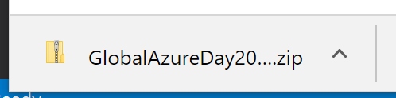
Don't open the zip file yet. You need to unblock it first!
Right-click the zip file and go to the properties option. Check the Unblock option, press Apply, press Ok.
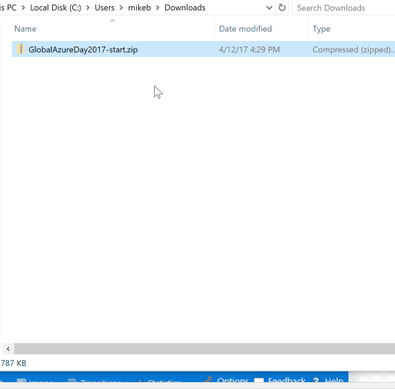
Now it's safe to unzip the file.
Verify the site works
Exercise: Compiling the solution
Open the solution in Visual Studio by double-clicking the Web.sln file in to root of the extracted files:
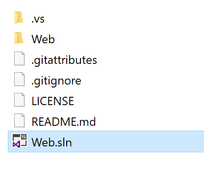
The opened solution should look like this:
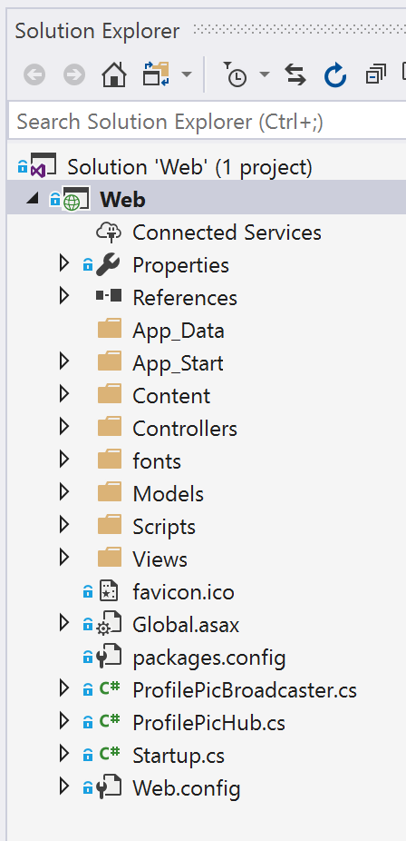
Build and debug the solution. You should see the MVC 5 template spin up in your browser.
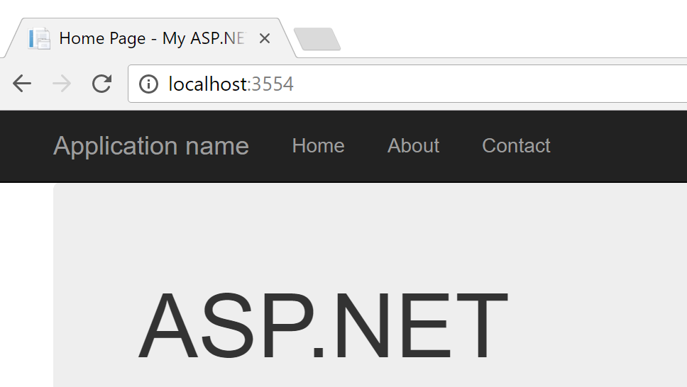
That's it! You're up and running and ready to move on!
Updating Windows Identity
In this chapter, you'll be learning about ASP.NET Identity and how to move it's back-end data store from SQL Server to Azure Table Storage.
Before we begin, let's cover a few basics on what ASP.NET Identity is and how it works.
A brief history of ASP.NET authentication and authorization
If you've developed an ASP.NET application prior to 2014, you've probably heard of the ASP.NET membership system.
The ASP.NET membership system was introduced with ASP.NET 2.0 back in 2005, and since then there have been many changes in the ways web applications typically handle authentication and authorization (credits: docs.microsoft.com).
Credit for this section is attributed to Microsoft.
ASP.NET Membership
ASP.NET Membership was designed to solve site membership requirements that were common in 2005, which involved Forms Authentication, and a SQL Server database for user names, passwords, and profile data. Today there is a much broader array of data storage options for web applications, and most developers want to enable their sites to use social identity providers for authentication and authorization functionality. The limitations of ASP.NET Membership's design make this transition difficult:
- The database schema was designed for SQL Server and you can't change it. You can add profile information, but the additional data is packed into a different table, which makes it difficult to access by any means except through the Profile Provider API.
- The provider system enables you to change the backing data store, but the system is designed around assumptions appropriate for a relational database. You can write a provider to store membership information in a non-relational storage mechanism, such as Azure Storage Tables, but then you have to work around the relational design by writing a lot of code and a lot of
System.NotImplementedExceptionexceptions for methods that don't apply to NoSQL databases. - Since the log-in/log-out functionality is based on Forms Authentication, the membership system can't use OWIN. OWIN includes middleware components for authentication, including support for log-ins using external identity providers (like Microsoft Accounts, Facebook, Google, Twitter), and log-ins using account from on-premises Active Directory or Azure Active Directory. OWIN also includes support for OAuth 2.0, JWT and CORS.
ASP.NET Simple Membership
ASP.NET Simple Membership was developed as a membership system for ASP.NET Web Pages. It was released with WebMatrix and Visual Studio 2010 SP1. The goal of Simple Membership was to make it easy to add membership functionality to a Web Pages application.
Simple Membership did make it easier to customize user profile information, but it still shares the other problems with ASP.NET Membership, and it has some limitations:
- It was hard to persist membership system data in a non-relational store.
- You can't use it with OWIN.
- It doesn't work well with existing ASP.NET Membership providers, and it's not extensible.
ASP.NET Universal Providers
ASP.NET Universal Providers were developed to make it possible to persist membership information in Microsoft Azure SQL Database, and they also work with SQL Server Compact. The Universal Providers were built on Entity Framework Code First, which means that the Universal Providers can be used to persist data in any store supported by EF. With the Universal Providers, the database schema was cleaned up quite a lot as well.
The Universal Providers are built on the ASP.NET Membership infrastructure, so they still carry the same limitations as the SqlMembership Provider. That is, they were designed for relational databases and it's hard to customize profile and user information. These providers also still use Forms Authentication for log-in and log-out functionality.
Exploring ASP.NET Identity
As the membership story in ASP.NET has evolved over the years, the ASP.NET team has learned a lot from feedback from customers.
The assumption that users will log in by entering a user name and password that they have registered in your own application is no longer valid. The web has become more social. Users are interacting with each other in real time through social channels such as Facebook, Twitter, and other social web sites. Developers want users to be able to log in with their social identities so that they can have a rich experience on their web sites. A modern membership system must enable redirection-based log-ins to authentication providers such as Facebook, Twitter, and others.
As web development evolved, so did the patterns of web development. Unit testing of application code became a core concern for application developers. In 2008 ASP.NET added a new framework based on the Model-View-Controller (MVC) pattern, in part to help developers build unit testable ASP.NET applications. Developers who wanted to unit test their application logic also wanted to be able to do that with the membership system.
Considering these changes in web application development, ASP.NET Identity was developed with the following goals:
One ASP.NET Identity system
- ASP.NET Identity can be used with all of the ASP.NET frameworks, such as ASP.NET MVC, Web Forms, Web Pages, Web API, and SignalR.
- ASP.NET Identity can be used when you are building web, phone, store, or hybrid applications.
Ease of plugging in profile data about the user
- You have control over the schema of user and profile information. For example, you can easily enable the system to store birth dates entered by users when they register an account in your application.
Persistence control
- By default, the ASP.NET Identity system stores all the user information in a database. ASP.NET Identity uses Entity Framework Code First to implement all of its persistence mechanism.
- Since you control the database schema, common tasks such as changing table names or changing the data type of primary keys is simple to do.
- It's easy to plug in different storage mechanisms such as SharePoint, Azure Storage Table Service, NoSQL databases, etc., without having to throw
System.NotImplementedExceptionsexceptions.
Unit testability
- ASP.NET Identity makes the web application more unit testable. You can write unit tests for the parts of your application that use ASP.NET Identity.
Role provider
- There is a role provider which lets you restrict access to parts of your application by roles. You can easily create roles such as "Admin" and add users to roles.
Claims Based
- ASP.NET Identity supports claims-based authentication, where the user's identity is represented as a set of claims. Claims allow developers to be a lot more expressive in describing a user's identity than roles allow. Whereas role membership is just a boolean (member or non-member), a claim can include rich information about the user's identity and membership.
Social Login Providers
- You can easily add social log-ins such as Microsoft Account, Facebook, Twitter, Google, and others to your application, and store the user-specific data in your application.
Azure Active Directory
- You can also add log-in functionality using Azure Active Directory, and store the user-specific data in your application. To learn more about Azure Active Directory, check out this article.
OWIN Integration
- ASP.NET authentication is now based on OWIN middleware that can be used on any OWIN-based host. ASP.NET Identity does not have any dependency on System.Web. It is a fully compliant OWIN framework and can be used in any OWIN hosted application.
- ASP.NET Identity uses OWIN Authentication for log-in/log-out of users in the web site. This means that instead of using FormsAuthentication to generate the cookie, the application uses OWIN CookieAuthentication to do that.
NuGet package
- ASP.NET Identity is redistributed as a NuGet package which is installed in the ASP.NET MVC, Web Forms and Web API templates that ship with Visual Studio 2013. You can download this NuGet package from the NuGet gallery.
- Releasing ASP.NET Identity as a NuGet package makes it easier for the ASP.NET team to iterate on new features and bug fixes, and deliver these to developers in an agile manner.
Getting Started with ASP.NET Identity
ASP.NET Identity is used in the Visual Studio project templates for ASP.NET MVC, Web Forms, Web API and SPA. In this walk-through, we'll illustrate how the project templates use ASP.NET Identity to add functionality to register, log in and log out a user.
ASP.NET Identity is implemented using the following procedure. The purpose of this section is to give you a high level overview of ASP.NET Identity.
You do not need to follow along with these steps, but are welcome to.
Create an ASP.NET MVC application with Individual Accounts. You can use ASP.NET Identity in ASP.NET MVC, Web Forms, Web API, SignalR etc. In this example we start with an ASP.NET MVC application.

The created project contains the following three packages for ASP.NET Identity.
Microsoft.AspNet.Identity.EntityFramework This package has the Entity Framework implementation of ASP.NET Identity which will persist the ASP.NET Identity data and schema to SQL Server.
Microsoft.AspNet.Identity.Core This package has the core interfaces for ASP.NET Identity. This package can be used to write an implementation for ASP.NET Identity that targets different persistence stores such as Azure Table Storage, NoSQL databases etc.
Microsoft.AspNet.Identity.OWIN This package contains functionality that is used to plug in OWIN authentication with ASP.NET Identity in ASP.NET applications. This is used when you add log in functionality to your application and call into OWIN Cookie Authentication middleware to generate a cookie.
Registering a user. After the project is created, launch the web application. Click on the Register link to create a user. The following image shows the Register page which collects the user name and password.
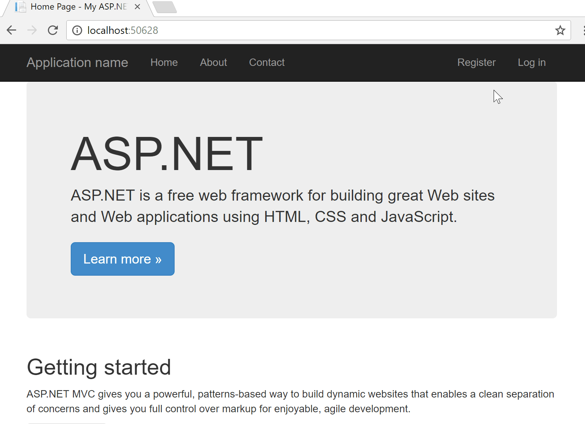
When the user clicks the Register button, the Register action of the Account controller creates the user by calling the ASP.NET Identity API. In the code snippet below, the
ApplicationUserandUserManagerclasses are part of ASP.NET Identity. AnApplicationUseris created and passed to theUserManagerclass to create the user.[HttpPost] [AllowAnonymous] [ValidateAntiForgeryToken] public async Task<ActionResult> Register(RegisterViewModel model) { if (ModelState.IsValid) { var user = new ApplicationUser { UserName = model.Email, Email = model.Email }; var result = await UserManager.CreateAsync(user, model.Password); if (result.Succeeded) { // code truncated purposefully } AddErrors(result); } // If we got this far, something failed, re-display form return View(model); }DEFINITION The
ApplicationUserclass is part of the ASP.NET MVC template, and inherits from theIdentityUserclass. The class name doesn't matter, but inheriting fromIdentityUserdoes. We're not going to cover the specifics of theIdentityUserclass in this workshop, but it represents a user, with properties like Name, Email, PhoneNumber, etc. For more details on theIdentityUserclass check out this article.DEFINITION The
UserManagerclass is part of ASP.NET Identity and provides methods for managing users. Strange, right? ;-)Luckily, the ASP.NET MVC template provides a solid foundation for us, so you don't need to know everything about ASP.NET Identity to start using it. As we continue, we'll make sure you know what you'll need to know as we go.
Logging in. If user registration is successful, the user is automatically logged in. A call to the
SignInManagerclass is made, passing the instance of theApplicationUserpreviously created.[HttpPost] [AllowAnonymous] [ValidateAntiForgeryToken] public async Task<ActionResult> Register(RegisterViewModel model) { if (ModelState.IsValid) { var user = new ApplicationUser { UserName = model.Email, Email = model.Email }; var result = await UserManager.CreateAsync(user, model.Password); if (result.Succeeded) { await SignInManager.SignInAsync(user, isPersistent:false, rememberBrowser:false); return RedirectToAction("Index", "Home"); } AddErrors(result); } // If we got this far, something failed, re-display form return View(model); }DEFINITION The
SignInManagerclass is also part of ASP.NET Identity and provides methods for managing the sign in processes.We're not diving into the details of what actually happens when a user is signed in (for example, creating a claim, cookie, etc.). If you're interested in the details, check out this article.
There are various other classes in ASP.NET Identity and the ASP.NET MVC template of importance, but we're not going to investigate them here. But, don't worry. We'll teach you about it as needed.
ASP.NET Identity Data Storage
In this section, you'll be learning how to replace the back-end data storage platform of ASP.NET Identity. By default, ASP.NET Identity uses Entity Framework to manage data persistence to SQL Server.
Using Entity Framework and SQL Server is a great choice. In fact, we could provision a SQL Server database in Azure, and use that for the back-end data store for ASP.NET Identity.
Instead, you'll be replacing Entity Framework and SQL Server with a highly-scalable and light-weight NoSQL Azure service called Table storage.
Before we jump in, let's learn a little bit about Azure Table Storage.
What is Azure Table Storage?
Azure Table storage is a service that stores structured NoSQL data in the cloud, providing a key/attribute store with a schemaless design. Because Table storage is schemaless, it's easy to adapt your data as the needs of your application evolve. Access to Table storage data is fast and cost-effective for many types of applications, and is typically lower in cost than traditional SQL for similar volumes of data.
You can use Table storage to store flexible datasets like user data for web applications, address books, device information, or other types of metadata your service requires. You can store any number of entities in a table, and a storage account may contain any number of tables, up to the capacity limit of the storage account
The Azure Table Service
The Azure Table storage service stores large amounts of structured data. The service is a NoSQL datastore which accepts authenticated calls from inside and outside the Azure cloud. Azure tables are ideal for storing structured, non-relational data. Common uses of the Table service include:
- Storing TBs of structured data capable of serving web scale applications
- Storing datasets that don't require complex joins, foreign keys, or stored procedures and can be denormalized for fast access
- Quickly querying data using a clustered index
- Accessing data using the OData protocol and LINQ queries with WCF Data Service .NET Libraries
You can use the Table service to store and query huge sets of structured, non-relational data, and your tables will scale as demand increases.
Table Service Concepts
The Table service contains the following components:

At the top level is a storage account. Storage accounts are named containers with a URL, which is used to access various services housed within the account. You'll be creating a storage account later in the workshop.
There are various concepts important to know about Azure Table Storage:
URL format: You can access tables and entities through code using this address format: http://
<storage account>.table.core.windows.net/<table>You can also address Azure tables directly using this address with the OData protocol. For more information, see OData.org.Storage Account: All access to Azure Storage is done through a storage account.
Table: A table is a collection of entities. Tables don't enforce a schema on entities, which means a single table can contain entities that have different sets of properties. The number of tables that a storage account can contain is limited only by the storage account capacity limit.
Entity: An entity is a set of properties, similar to a database row. An entity can be up to 1MB in size.
Properties: A property is a name-value pair. Each entity can include up to 252 properties to store data. Each entity also has 3 system properties that specify a partition key, a row key, and a timestamp. Entities with the same partition key can be queried more quickly, and inserted/updated in atomic operations. An entity's row key is its unique identifier within a partition.
Comparing Table storage to SQL Server tables
If you're familiar with SQL server, you can compare it easily to the storage account, table service, tables, and entities:
- SQL Server == Storage Account
- Database == Table Service
- Table == Table
- Record == Entity
- Column == Property
Now that you know about Table storage, let's get to work replacing Entity Framework and SQL Server as the back-end store for ASP.NET Identity.
Replacing the back-end Data Store of ASP.NET Identity
Exercise: Removing Entity Framework
Start by right-clicking your solution in the Visual Studio solution explorer and selecting Manage NuGet Packages for Solution....
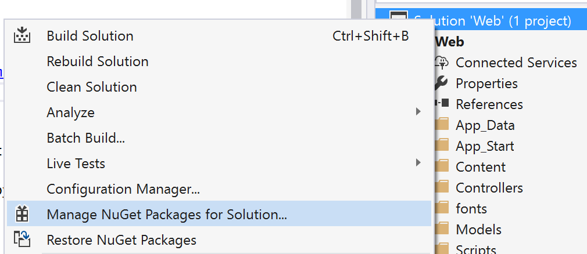
In the NuGet window, click on Installed, type in entity in the Search bar:
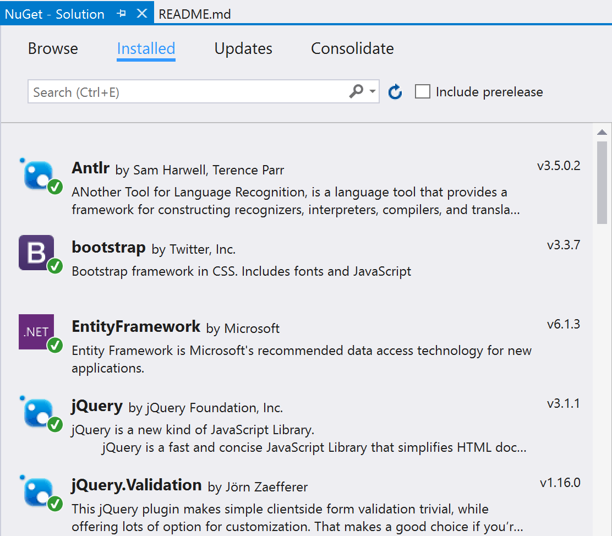
Uninstall these NuGet packages in the following order:
- Microsoft.AspNet.Identity.EntityFramework
- EntityFramework
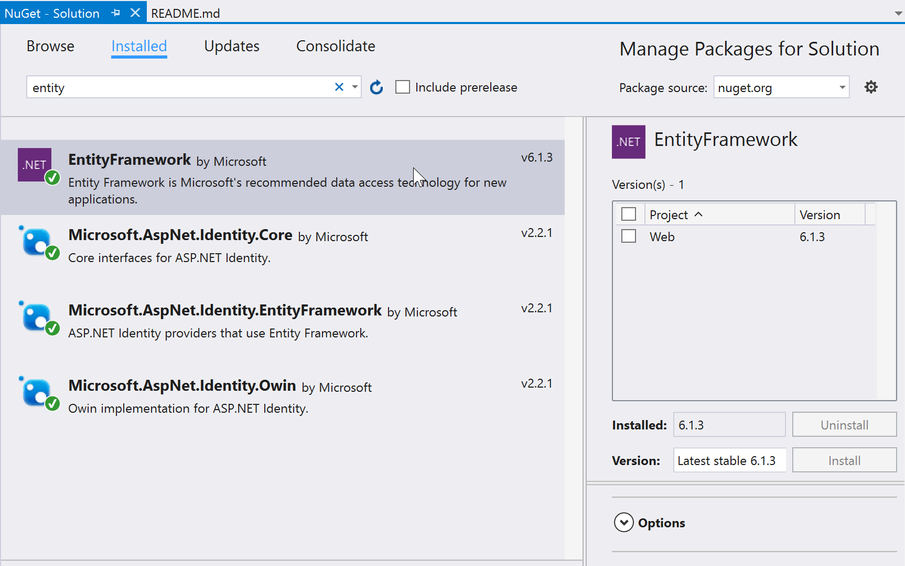
We're not done yet, so hold on. There are several references to Entity Framework in the web.config file. Remove the following:
In <configSections>, remove the section named entityFramework. Leave the <configSections> element in place, because we'll be adding to it later.
<configSections>
<section name="entityFramework" type="System.Data.Entity.Internal.ConfigFile.EntityFrameworkSection, EntityFramework, Version=6.0.0.0, Culture=neutral, PublicKeyToken=b77a5c561934e089" requirePermission="false" />
</configSections>
Delete the connection string named DefaultConnection:
<connectionStrings>
<add name="DefaultConnection" connectionString="Data Source=(LocalDb)\MSSQLLocalDB;AttachDbFilename=|DataDirectory|\aspnet-Web-20170403111511.mdf;Initial Catalog=aspnet-Web-20170403111511;Integrated Security=True" providerName="System.Data.SqlClient" />
</connectionStrings>
Scroll to element named <entityFramework>...</entityFramework> near the end of the file. Remove the entire element:
<entityFramework>
<defaultConnectionFactory type="System.Data.Entity.Infrastructure.LocalDbConnectionFactory, EntityFramework">
<parameters>
<parameter value="mssqllocaldb" />
</parameters>
</defaultConnectionFactory>
<providers>
<provider invariantName="System.Data.SqlClient" type="System.Data.Entity.SqlServer.SqlProviderServices, EntityFramework.SqlServer" />
</providers>
</entityFramework>
Now that we've removed Entity Framework, we need to replace it. If you recall, Entity Framework was used by ASP.NET Identity as a middleware to map between ASP.NET Identity code objects (like the IdentityUser class) and the back-end data store.
We'll be using Azure Table storage as our data store, so we'll have to add another library to act as the middleware for persisting data to Azure Table storage. The package we'll be using is named ElCamino.AspNet.Identity.AzureTable.
NOTE The El Camino package is maintained by David Melendez on Github. By default, the ASP.NET Identity system stores all the user information in a Microsoft SQL database using an EntityFramework provider. This project is a replacement of the EntityFramework SQL provider to use Azure Table Storage to persist user information such as (but not limited to): username/password, roles, claims and external login information.
Exercise: Adding the ElCamino.AspNet.Identity.AzureTable package
Open the NuGet package manager for the solution, browse for and install the ElCamino.AspNet.Identity.AzureTable NuGet package:
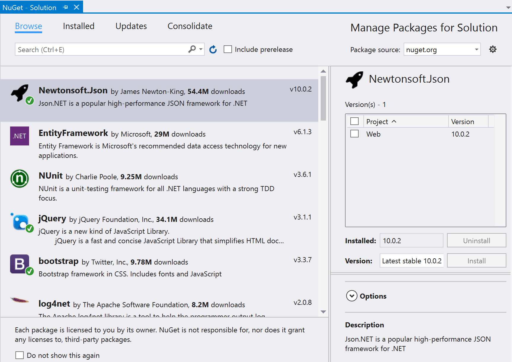
The installation of this package will install various additional packages. If prompted, allow them to be installed. Also accept any license agreements, if prompted.
After the ElCamino.AspNet.Identity.AzureTable package has been installed, there will be several NuGet packages that need updated. Click the Updates link and update all NuGet packages

NOTE You may need to update the NuGet packages several times, as various packages will install new dependencies during the upgrade process.
Now that the easy part is finished, it's time to start updating code to account for a new back-end data store. ASP.NET Identity makes this relatively painless. Let's get started.
Exercise: Updating ASP.NET Identity code to replace Entity Framework
IdentityModel.cs Changes
The first code change we'll make is to the IdentityModel.cs file. You can find this file in the Models folder of the web project.
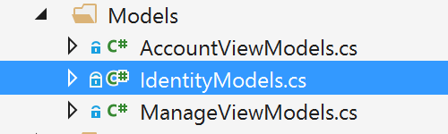
Replace the using statements at the top, removing the Entity Framework references and adding the ElCamino references.
NOTE Throughout the workshop, feel free to copy and paste code directly from the guide into Visual Studio. There's a handy Copy button above our code listings!
using System.Security.Claims;
using System.Threading.Tasks;
using Microsoft.AspNet.Identity;
using ElCamino.AspNet.Identity.AzureTable;
using ElCamino.AspNet.Identity.AzureTable.Model;
Find the class declaration for ApplicationDbContext. This class is an abstraction used to interface between the ASP.NET MVC template code for ASP.NET Identity and the middleware that interfaces with ASP.NET Identity. The class currently inherits from IdentityDbContext<>.
Change the class declaration so it inherits from IdentityCloudContext. Also remove the parameterized base class constructor. The new ApplicationDbContext class should look like this:
public class ApplicationDbContext : IdentityCloudContext
{
public ApplicationDbContext() : base() { }
public static ApplicationDbContext Create()
{
return new ApplicationDbContext();
}
}
IdentityConfig.cs Changes
The next file we'll change is the IdentityConfig.cs file, located in the App_Start folder:
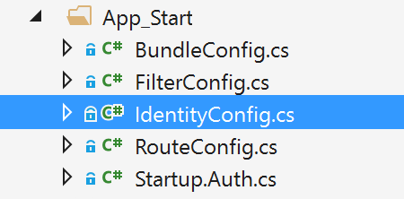
This file contains a variety of class definitions used by the ASP.NET MVC template. The most important of the classes is the ApplicationUserManager class. This class is responsible for configuring policies and defaults for user accounts in the application (for example, the password validation policy, user email address uniqueness, lockout period if a password is typed in wrong X number of times, and multi-factor authentication via SMS and/or email).
The ApplicationUserManager class also contains a reference to the back-end data store used to store user account information. We'll be modifying the class to auto-create the necessary tables if they don't exist.
Start by replacing the using statements at the top, removing the Entity Framework references and adding the ElCamino references.
using System;
using System.Collections.Generic;
using System.Linq;
using System.Security.Claims;
using System.Threading.Tasks;
using System.Web;
using Microsoft.AspNet.Identity;
using Microsoft.AspNet.Identity.Owin;
using Microsoft.Owin;
using Microsoft.Owin.Security;
using Web.Models;
using ElCamino.AspNet.Identity.AzureTable;
using ElCamino.AspNet.Identity.AzureTable.Model;
Next, add a function named StartupAsync() that creates a new UserStore and creates the necessary Azure Tables. Place the below code beneath the ApplicationUserManager class constructor.
NOTE You might be wondering how we came up with this code. ElCamino has documentation online with this well-documented code. If you're interested in the details and their implementation specifics, check out their website.
/// <summary>
/// ElCamino - Creates the Azure Table Storage Tables
/// </summary>
public static async void StartupAsync()
{
var azureStore = new UserStore<ApplicationUser>(new ApplicationDbContext());
await azureStore.CreateTablesIfNotExists();
}
Global.asax.cs Changes
Unfortunately, the StartupAsync() function you just added doesn't get called automatically. We'll need to update the Global.asax.cs file to invoke the StartupAsync() function when the application starts.
using System;
using System.Collections.Generic;
using System.Linq;
using System.Web;
using System.Web.Mvc;
using System.Web.Optimization;
using System.Web.Routing;
namespace Web
{
public class MvcApplication : System.Web.HttpApplication
{
protected void Application_Start()
{
//ElCamino - Added to create azure tables
ApplicationUserManager.StartupAsync();
AreaRegistration.RegisterAllAreas();
FilterConfig.RegisterGlobalFilters(GlobalFilters.Filters);
RouteConfig.RegisterRoutes(RouteTable.Routes);
BundleConfig.RegisterBundles(BundleTable.Bundles);
}
}
}
web.config Changes
The last step is to update the web.config file and add several ElCamino references to configure the middleware and specify a connection string to connect to Azure.
Replace the <configSections>...</configSections> element with the following code:
<configSections>
<section name="elcaminoIdentityConfiguration" type="ElCamino.AspNet.Identity.AzureTable.Configuration.IdentityConfigurationSection,ElCamino.AspNet.Identity.AzureTable " />
</configSections>
<elcaminoIdentityConfiguration tablePrefix="" storageConnectionString="UseDevelopmentStorage=true" />
<!--<elcaminoIdentityConfiguration tablePrefix="" storageConnectionString="DefaultEndpointsProtocol=https;AccountName=STORAGE_ACCOUNT_NAME;AccountKey=STORAGE_ACCOUNT_KEY;" />-->
By adding these XML settings, we're now able to specify an azure table storage account connection string via the web.config file. You may notice the connection string is UseDevelopmentStorage=true. This allows us to develop locally without interfacing directly with Azure. You'll learn the details of this soon, so hang in there.
Nice work! We've finished replacing the back-end data store of ASP.NET Identity to use Azure Table storage instead of Entity Framework and SQL Server.
If you've been following along, you should be able to compile the solution. Go ahead and try.
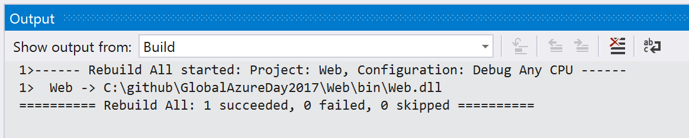
In the next chapter, you'll learn how we can develop locally by using the Azure Storage emulator, and how to create an Azure storage account in the cloud.
Using Azure Storage Emulator to Develop Locally
Even though this workshop is all about the cloud and using Azure, it doesn't mean that we need to be connected to the cloud to develop and test our work.
In fact, an important aspect of a technology stack is being able to quickly and easily create an isolated (and local) environment for development and testing.
In this section, you'll learn how to use the Azure Storage Emulator to host your own Azure-like table storage environment. You'll also learn how to use Storage Explorer, a GUI application (similar to SQL Server Management Studio), that allows you to navigate and browse through your Azure storage accounts.
Pre-requisite Check
Before we jump in, be sure to have installed these tools:
Running Azure Storage Emulator
The Azure Storage Emulator is a command line tool. Let's start it up.
Exercise: Starting up the Azure Storage Emulator
Locate the Microsoft Azure Storage Emulator - vX.X in your start menu.
NOTE I find it easiest to find by opening the start menu and typing
storage.
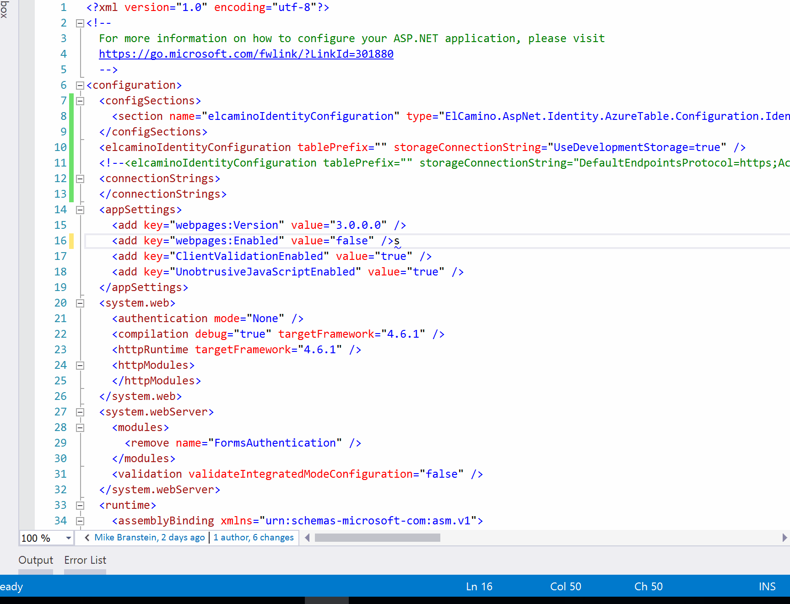
When you run the storage emulator, a command prompt will open, initialize the emulator by installing a SQL database into your (localdb)\MSSQLLocalDB instance, and start the emulator.
After the emulator is started, a tray icon will appear noting the emulator is running:
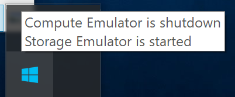
Troubleshooting the Storage Emulator
You may have problems starting the storage emulator, and will receive an ambiguous error:
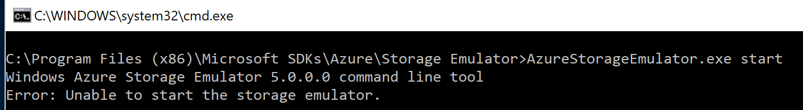
There's a number of reasons why you may receive this error, including:
- Another program is listening on ports 10000, 10001, and 10002. Try shutting off Bit Torrent clients or other file sharing programs.
- You're not running the emulator as an Administrator.
Most of the time, I've found that the command prompt session trying to run the storage emulator wasn't running as an Administrator. Here's how to fix that problem:
Open an Administrator command prompt by opening the start menu, typing cmd, right-clicking on the Command Prompt app, and selecting Run as administrator.

Change into the C:\Program Files (x86)\Microsoft SDKs\Azure\Storage Emulator folder:
cd "C:\Program Files (x86)\Microsoft SDKs\Azure\Storage Emulator"
Run the AzureStorageEmulator.exe start command to start the storage emulator:
AzureStorageEmulator.exe start
The storage emulator should start.
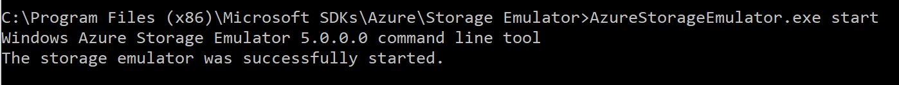
Using Storage Explorer
After the the Azure Storage Emulator is running, let's turn our attention to Storage Explorer. Storage Explorer is a standalone app from Microsoft that allows you to easily work with Azure Storage Accounts on Windows, macOS and Linux.
We'll be using Storage Explorer throughout the workshop to peek into the local storage account (created by the Storage Emulator) and Azure-hosted storage account.
Let's get started!
Exercise: Starting up the Azure Storage Emulator
You'll find Storage Explorer in your start menu. Open the start menu, type in storage, and look for Microsoft Azure Storage Explorer under the Apps section:
When Storage Explorer launches for the first time, you'll be prompted to connect to Azure Storage:
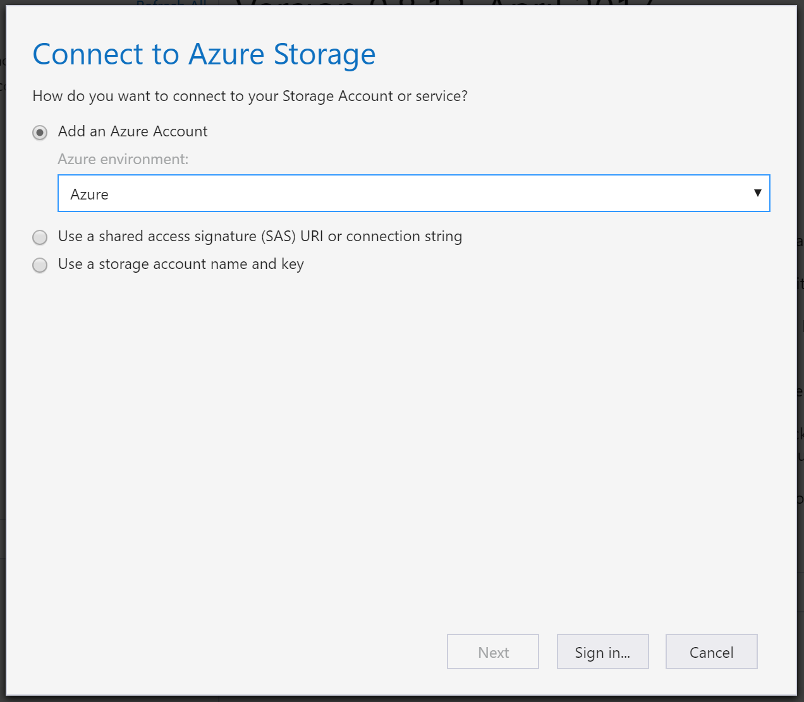
Click Sign In and enter your Azure account credentials.
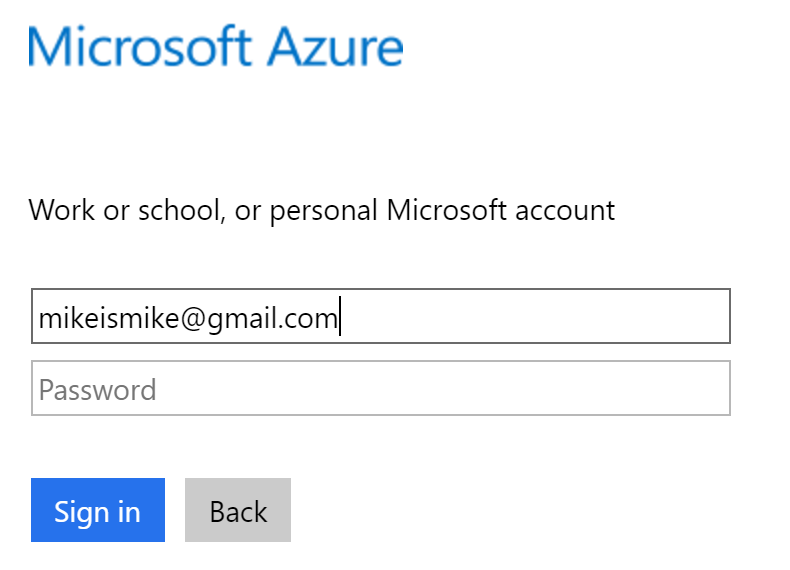
After entering your credentials, you'll see a list of Azure subscriptions associated with your account. NOTE: You can have multiple subscriptions linked to your account (like mine), or just one.
Check the box next to the subscription you want to use. Press Apply.
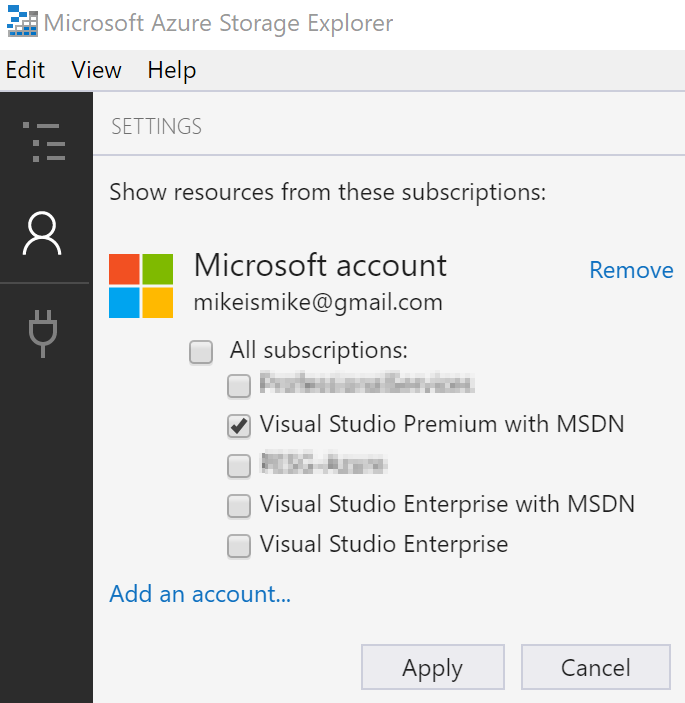
On the left-hand side, you'll see a list of azure subscriptions and local storage accounts. Locate the local storage account named (Local and Attached). Drill down to Storage Accounts -> (Development) -> Tables.
Take note there are no tables in your local storage account.
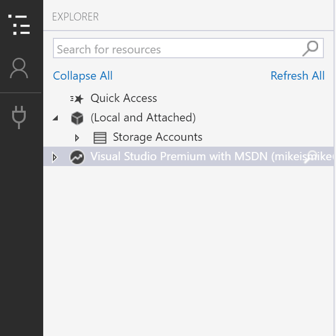
Congratulations! That's how easy it is to use Storage Explorer. We'll come back to Storage Explorer in a few minutes.
Head back to Visual Studio and run your web app.
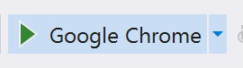
If you've made all the changes to your app successfully, the app should start up, and you'll be greeted with the default ASP.NET MVC template page again.
But, something will be different this time. You'll recall that we've swapped out Entity Framework and SQL Server in lieu of Azure Table Storage. You'll also recall that we configured the app to create the necessary tables needed for ASP.NET Identity on app startup.
Let's check back in Storage Emulator to see the tables created:
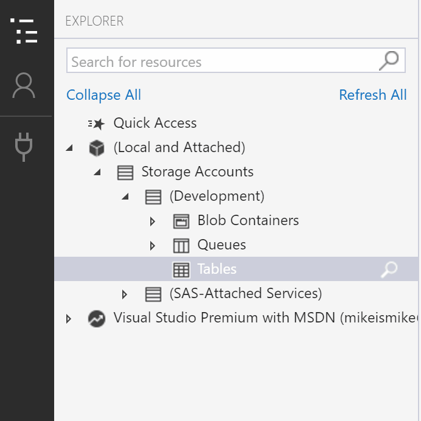
You should now see the AspNetIndex, AspNetRoles, and AspNetUsers tables.
Testing it out
Now that everything is running, let's test it out by registering a new user.
Exercise: Register a user
Click the Register link in the upper-right corner of the app. Enter in an email and password. Press the Register button to create the user.
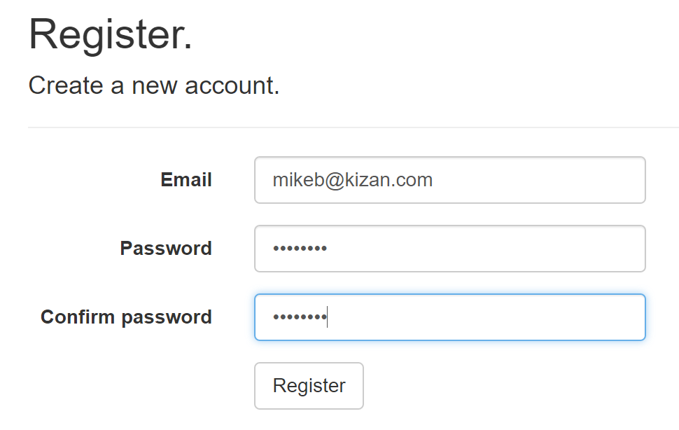
After registering, you're automatically logged in as that user. Take a minute to explore your user profile by clicking on your name in the upper-right.
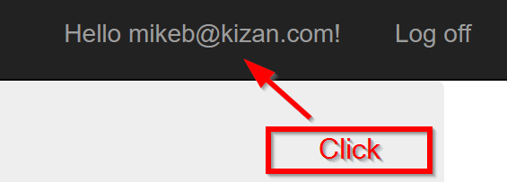
We'll be coming back to this profile page throughout the workshop, modifying it to add a profile picture and a biography.
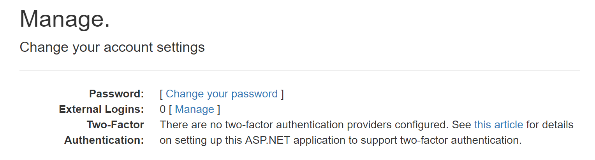
After registering the user, let's look back at Storage Explorer. Select the AspNetUsers table and view the contents of the table in the right-side panel.
NOTE You may need to press the Refresh button to load the data into the table.
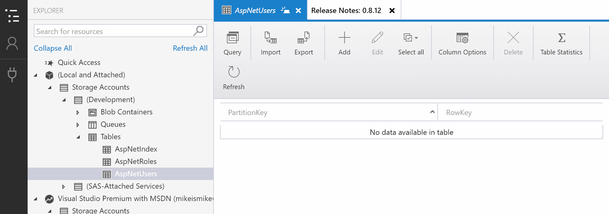
That's it for chapter 3. In the next chapter, you'll learn how to connect the web app to an Azure-hosted Table Storage account.
Connecting the app to Azure
In this chapter, you'll be learning how to create an Azure storage account and connect the web app we created in chapters 2 and 3 to the storage account.
Creating a Resource Group
Our first stop will be to create a Resource Group in Azure.
DEFINITION Formally, resource groups provide a way to monitor, control access, provision and manage billing for collections of assets that are required to run an application, or used by a client or company department. Informally, think of resource groups like a file system folder, but instead of holding files and other folders, resource groups hold azure objects like storage accounts, web apps, functions, etc.
Exercise: Create a Dashboard and Resource Group
Creating a Dashboard
We'll start by creating a dashboard.
Login to the Azure portal, click + New Dashboard, give the dashboard name, and click Done customizing.
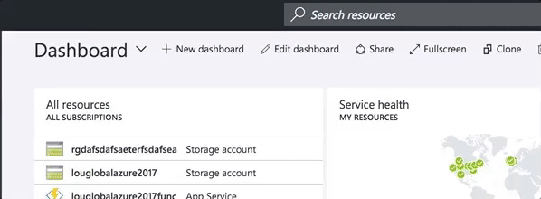
That was easy! Dashboards are a quick way of organizing your Azure services. We like to create one for the workshop because it helps keep everything organized. You'll have a single place to go to find everything you build today.
Creating a Resource Group
Next, we'll create a resource group to hold the various services we'll be creating today.
Click the + New button on the left.
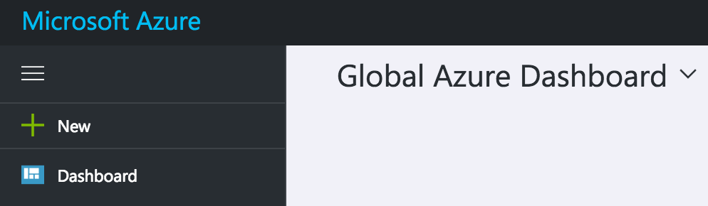
Search for resource group by using the search box, selecting Resource Group when it appears.

Select Resource Group from the search results window:

Click Create at the bottom:

Give the Resource group a name, select your Azure subscription, and a location. Also CHECK the Pin to Dashboard option. Press Create when you're finished.
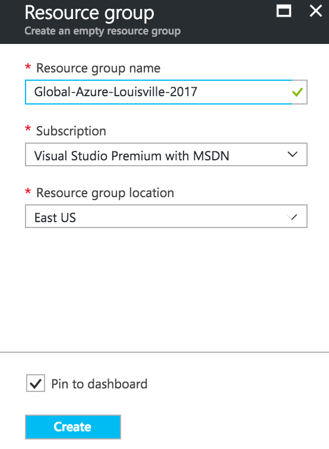
After it's created, it will be open in Azure automatically:
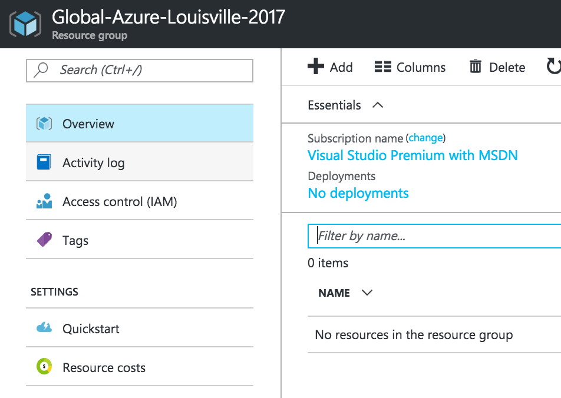
Close the resource group by clicking the X in the upper-right corner. Note that the resource group has been added to your dashboard.
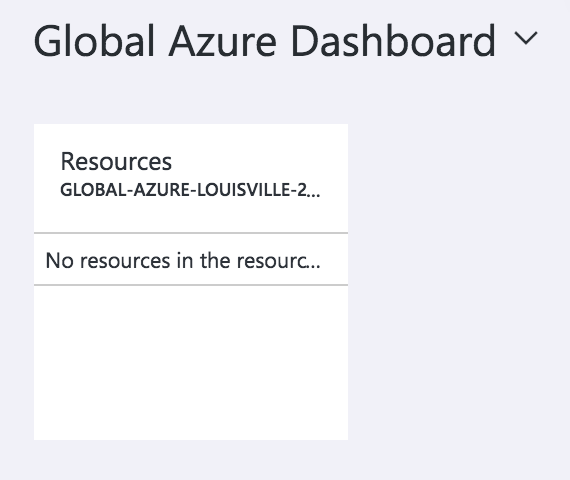
Form the dashboard, you can click on the resource group to re-open it at any time.
That wraps up the basics of creating resource groups. We're not going to take a deep dive into Azure Resource Group. If you're interested in learning more, check out this article.
Creating a Storage Account
Our next stop is at Storage Accounts. You'll recall from the last chapter that storage accounts are the topmost Azure service that contains other resources such as the blob storage, file storage, queue storage, and table storage services.
Before we can store data to an Azure table, we'll need to create a storage account.
Exercise: Create a Storage Account
Return to your dashboard if you're not already there. Click + New, select Storage from the list of service categories, and select Storage account - blob, file, table, queue.
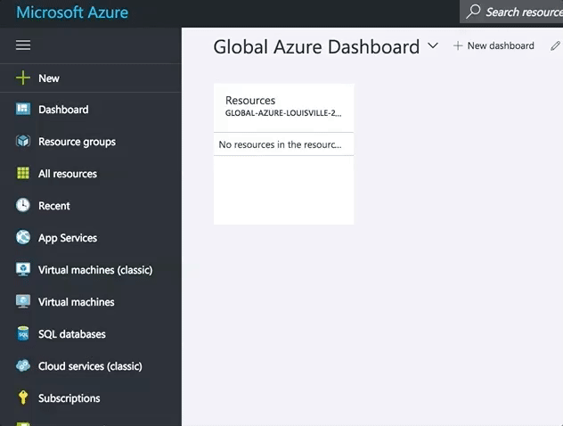
Complete the following fields:
- Name: this must be a unique, URL-friendly name that will be prepended to the URL
{storage-account-name}.core.windows.net. You'll use this full URL name to reference the storage account in code - Deployment model: Resource manager. The Classic option is a legacy option that will be deprecated soon. Don't pick it. Choosing the Resource manager options also allows you to create automation scripts for provisioning Azure resources easily
- Account kind: General purpose. You can create an account that stores only blobs (binary large objects), but for our workshop we want a storage account that can store both tables and blobs
- Performance: Standard, because our needs are simple. If you were an enterprise, you may want to choose Premium for the enhanced SLA and scalability. To learn more about the difference, check out this article
- Replication: Locally-redundant storage (LRS). The data in your Microsoft Azure storage account is always replicated to ensure durability and high availability. Replication copies your data, either within the same data center, or to a second data center, depending on which replication option you choose. Replication protects your data and preserves your application up-time in the event of transient hardware failures. If your data is replicated to a second data center, that also protects your data against a catastrophic failure in the primary location. To learn more read this article.
- Storage service encryption: Disabled. Azure Storage Service Encryption (SSE) for Data at Rest helps you protect and safeguard your data to meet your organizational security and compliance commitments. With this feature, Azure Storage automatically encrypts your data prior to persisting to storage and decrypts prior to retrieval. The encryption, decryption, and key management are totally transparent to users. To learn more, read this article.
- Subscription: Select your subscription.
- Resource group: Use existing and select the resource group you just created. By selecting the existing resource group, the storage account will be added to the resource group. This makes it easier to manage.
- Location: East US
- PIN to dashboard: Yes
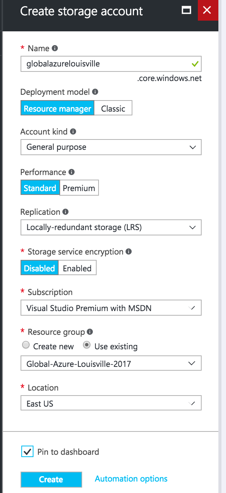
After you create the Storage account, you'll be brought back to your dashboard and presented with a deployment placeholder:
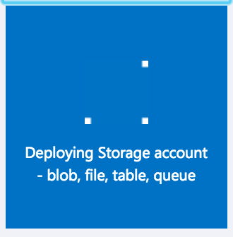
All Azure services deployed with the Resource Manager option are deployed in an asynchronous manner.
When the storage account is provisioned, it will open up in the portal.
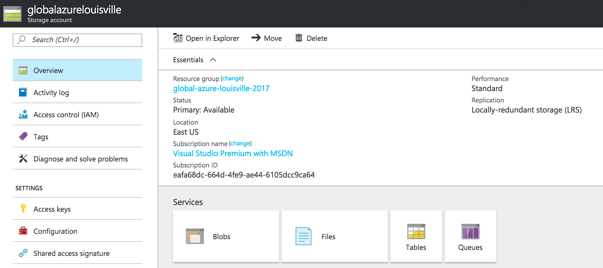
From the storage account details pages, you can explore the contents of blobs, files, tables, and queues. The experience is similar to that of storage explorer.

Accessing a Storage Account in Storage Explorer
Now that you've added a storage account to your Azure Subscription, let's check it out in Storage Explorer.
Exercise: Viewing an Azure-hosted Storage Account in Storage Explorer
In a previous step, we added our Azure subscription to Storage Explorer. Before continuing, ensure your subscription has been added.
Return to Storage Explorer and press the Refresh All link. You should see the storage account appear underneath your Azure subscription. You'll recall my storage account was named globalazurelouisville:
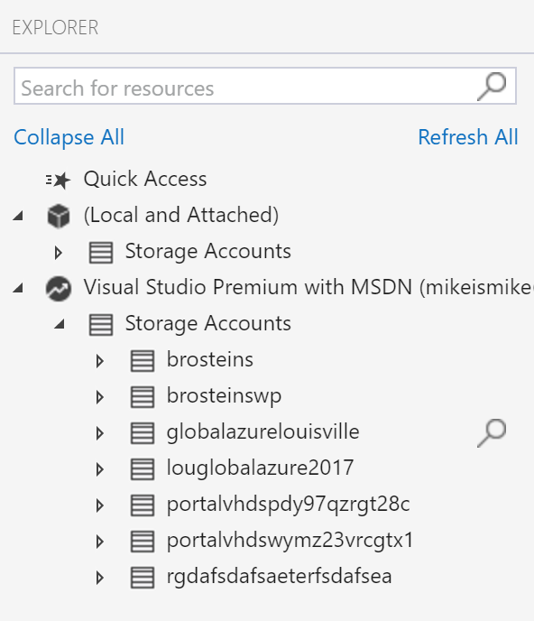
Expand the storage account, then the Tables item to verify no tables have been created.
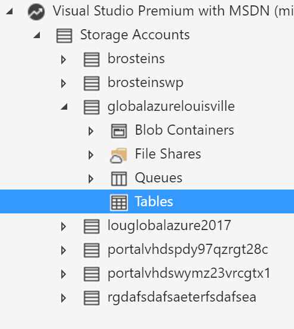
Great work! Now that we've provisioned a storage account and we can access it from Storage Explorer, it's time to start using it. In this next exercise, you'll obtain connection information from the storage account and add it to your web app.
Exercise: Getting a Storage Account Connection String
In an earlier chapter, you replaced Entity Framework with the El Camino package, so our web app could use Azure Table Storage to persist user information via ASP.NET Identity. As part of that process, several lines we added to the web.config file:
<configSections>
<section name="elcaminoIdentityConfiguration" type="ElCamino.AspNet.Identity.AzureTable.Configuration.IdentityConfigurationSection,ElCamino.AspNet.Identity.AzureTable " />
</configSections>
<elcaminoIdentityConfiguration tablePrefix="" storageConnectionString="UseDevelopmentStorage=true" />
<!--<elcaminoIdentityConfiguration tablePrefix="" storageConnectionString="DefaultEndpointsProtocol=https;AccountName=STORAGE_ACCOUNT_NAME;AccountKey=STORAGE_ACCOUNT_KEY;" />-->
Take a closer look at the <elcaminoIdentityConfiguration> element:
<elcaminoIdentityConfiguration tablePrefix="" storageConnectionString="UseDevelopmentStorage=true" />
This element contains a storage account connection string. Similar to SQL Server databases, storage accounts have a connection string. And, similar to local SQL server installations (like localdb), locally-hosted storage emulators have a special connection string.
When you're developing locally, the connection string is UserDevelopmentStorage=true.
But, when we move to the cloud, the connection string has an enhanced structure containing 3 components:
- Default Endpoints Protocol: the communication protocol used to talk to the remote table storage. By default it's https, and there's truthfully no reason for you to change it.
- Account Name: the name you gave the account.
- Account Key: a secret key that you shouldn't share with others. Treat it like a super user password.
You can see this structure in the commented-out section of the web.config from above:
<elcaminoIdentityConfiguration tablePrefix="" storageConnectionString="DefaultEndpointsProtocol=https;AccountName=STORAGE_ACCOUNT_NAME;AccountKey=STORAGE_ACCOUNT_KEY;" />
Let's update our web app to use the Azure-hosted storage account we just created. Comment-out the development configuration element and uncomment the element with the Azure-hosted connection string.
<configSections>
<section name="elcaminoIdentityConfiguration" type="ElCamino.AspNet.Identity.AzureTable.Configuration.IdentityConfigurationSection,ElCamino.AspNet.Identity.AzureTable " />
</configSections>
<!--<elcaminoIdentityConfiguration tablePrefix="" storageConnectionString="UseDevelopmentStorage=true" />-->
<elcaminoIdentityConfiguration tablePrefix="" storageConnectionString="DefaultEndpointsProtocol=https;AccountName=STORAGE_ACCOUNT_NAME;AccountKey=STORAGE_ACCOUNT_KEY;" />
Replace STORAGE_ACCOUNT_NAME with the name of the storage account you created in the previous steps. Ours looks like:
<elcaminoIdentityConfiguration tablePrefix="" storageConnectionString="DefaultEndpointsProtocol=https;AccountName=globalazurelouisville;AccountKey=STORAGE_ACCOUNT_KEY;" />
The last step is to get our storage account key, replacing the STORAGE_ACCOUNT_KEY placeholder int he web.config. Luckily, Storage Explorer makes this simple.
Go back to Storage Explorer, right-click the storage account name, selecting Copy Primary Key.
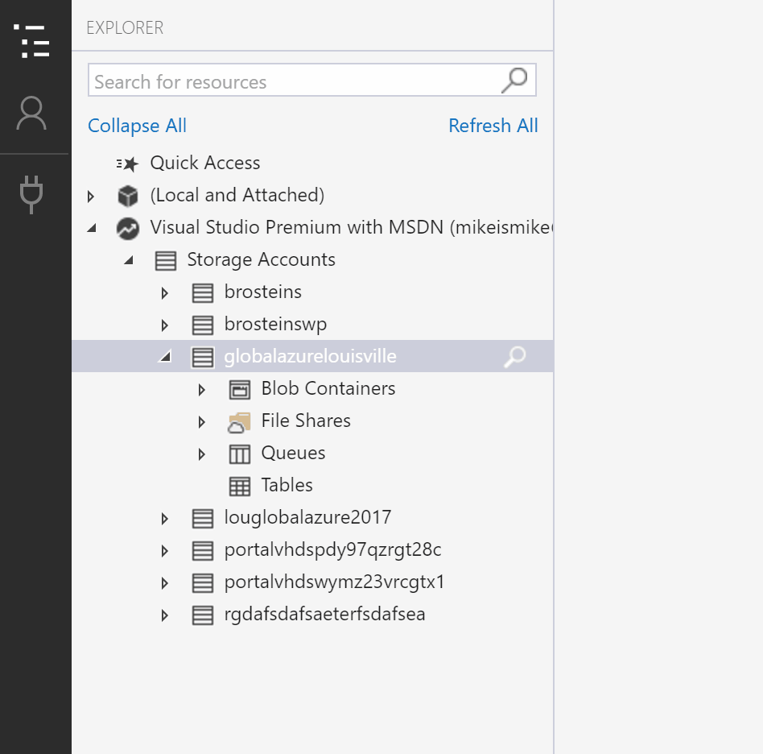
This copies the primary storage account key to your clipboard. Paste the key into your web.config, replacing STORAGE_ACCOUNT_KEY with the value from your clipboard.
Testing with Azure Table Storage
Now that you've updated the web.config to point to an Azure storage account, let's re-launch the web app and test it out!
Exercise: Testing the updated web app
When the web app launches, register a user.
NOTE You may recall that you previously registered a user with the app, but we've just told the app to use a different storage account for ASP.NET Identity. This means you'll have to re-register the user.
Click the Register link in the upper-right corner of the app. Enter in an email and password. Press the Register button to create the user.
As a final check, refresh the Azure storage account in Storage Explorer, verifying that the AspNetIndex, AspNetRoles, and AspNetUsers tables were created and your registered user appears in the AspNetUsers table.

Congratulations!
You just built a highly-scalable, secure, centralized, single-sign on system. That's right. The storage account you just created and attached to ASP.NET Identity can be shared across applications: just reuse the connection string in your next app. And the best part - it took ~45 minutes. Bam!
Pretty impressive.
Understanding App Service and Web Apps
In the last part of this chapter, you'll learn how to create an Azure Web App and deploy our solution to the cloud. In short, I like to think of Azure Web Apps like IIS in the cloud, but without the pomp and circumstance of setting up and configuring IIS.
Web Apps are also part of a larger Azure service called the App Service, which is focused on helping you to build highly-scalable cloud apps focused on the web (via Web Apps), mobile (via Mobile Apps), APIs (via API Apps), and automated business processes (via Logic Apps).
We don't have time to fully explore all of the components of the Azure App Service, so if you're interested, you can read more online.
What is an Azure Web App?
As we've mentioned, Web Apps are like IIS in the cloud, but calling it that seems a bit unfair because there's quite a bit more to Web Apps:
Websites and Web Apps: Web Apps let developers rapidly build, deploy, and manage powerful websites and web apps. Build standards-based web apps and APIs using .NET, Node.js, PHP, Python, and Java. Deliver both web and mobile apps for employees or customers using a single back end. Securely deliver APIs that enable additional apps and devices.
Familiar and fast: Use your existing skills to code in your favorite language and IDE to build APIs and apps faster than ever. Access a rich gallery of pre-built APIs that make connecting to cloud services like Office 365 and Salesforce.com easy. Use templates to automate common workflows and accelerate your development. Experience unparalleled developer productivity with continuous integration using Visual Studio Team Services, GitHub, and live-site debugging.
Enterprise grade: App Service is designed for building and hosting secure mission-critical applications. Build Azure Active Directory-integrated business apps that connect securely to on-premises resources, and then host them on a secure cloud platform that's compliant with ISO information security standard, SOC2 accounting standards, and PCI security standards. Automatically back up and restore your apps, all while enjoying enterprise-level SLAs.
Build on Linux or bring your own Linux container image: Azure App Service provides default containers for versions of Node.js and PHP that make it easy to quickly get up and running on the service. With our new container support, developers can create a customized container based on the defaults. For example, developers could create a container with specific builds of Node.js and PHP that differ from the default versions provided by the service. This enables developers to use new or experimental framework versions that are not available in the default containers.
Global scale: App Service provides availability and automatic scale on a global datacenter infrastructure. Easily scale applications up or down on demand, and get high availability within and across different geographical regions. Replicating data and hosting services in multiple locations is quick and easy, making expansion into new regions and geographies as simple as a mouse click.
Optimized for DevOps: Focus on rapidly improving your apps without ever worrying about infrastructure. Deploy app updates with built-in staging, roll-back, testing-in-production, and performance testing capabilities. Achieve high availability with geo-distributed deployments. Monitor all aspects of your apps in real-time and historically with detailed operational logs. Never worry about maintaining or patching your infrastructure again.
Deploying to a Web App from Visual Studio
Now that you understand the basics of web apps, let's create one and deploy our app to the cloud!
Earlier in this chapter, we created a storage account in Azure via the Azure portal. You can also create Web Apps via the Azure portal in the same manner. But, we're going to show you another way of creating a Web App: from Visual Studio.
Exercise: Deploying to a Web App from Visual Studio 2017
NOTE: This exercise assumes you're running Visual Studio 2017. The UI and screens in Visual Studio 2015 aren't the same, but similar. We're not going to include screen shots for 2015, but we think you can figure it out.
From Visual Studio, right-click the Web project and select Publish. In the web publish window, select Microsoft Azure App Service, Create New, and press Publish. This short clip walks you through the process:

On the next page, give your Web App a name, select your Azure subscription, and select the Resource Group you created earlier (mine was named Global-Azure-Louisville-2017).
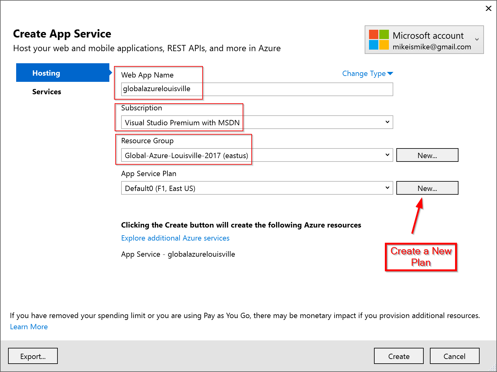
Click New... to create a new Web App plan.
NOTE Web App plans describe the performance needs of a web app. Plans range from free (where multiple web apps run on shared hardware) to not-so-free, where you have dedicated hardware, lots of processing power, RAM, and SSDs. To learn more about the various plans, check out this article.
Create a new free plan.
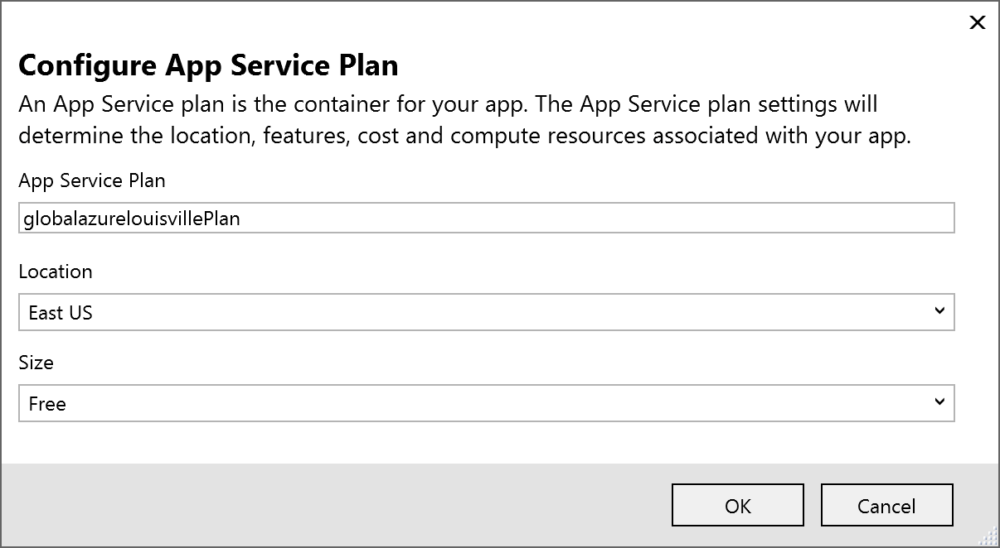
After the plan is created, click Create to create the Web App in Azure.

When the Azure Web App is created in Azure, Visual Studio will publish the app to the Web App. after the publish has finished, you should see something similar:
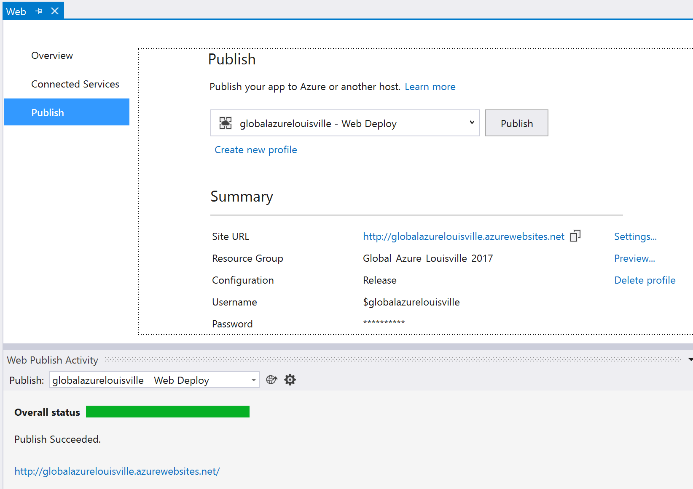
Finally, Visual Studio will launch the site in your browser, showing you your deployed site.
Well done. You've reached the end of chapter 4. If you've been following along, you have learned:
- How to create dashboards and resource groups in the Azure portal
- How to create a storage account for blobs, files, tables, and queues
- How to view the contents of a storage account with Storage Explorer
- What a storage account connection string looks like
- How to create a Web App from Visual Studio and deploy to it
Adding a custom field to AspNet Identity
In the previous chapters, you learned how to persist ASP.NET Identity user information in Azure Table Storage. You also learned how to use a locally-hosted storage emulator so you can develop without connecting the cloud.
In this chapter, we'll continue to update our web app by adding a custom field to the user's profile.
Visualizing What You're Building
Before we jump in, let's take a minute to visualize what you'll be building.
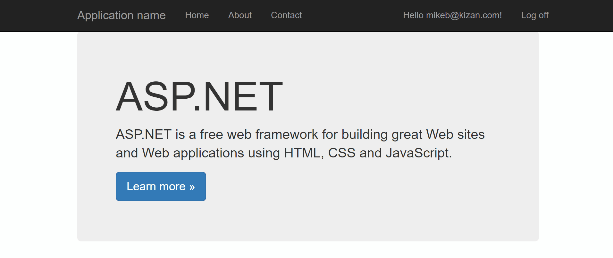
The ASP.NET MVC template starts with a profile management page that allows you to change your password, manage alternate logins (such as Facebook, Twitter, Microsoft, etc.), and configure multi-factor authentication (if enabled).
We'll be adding the Biography field. Once added, you'll be able to see your biography on the main page and navigate to a second page to update the biography.
You may also notice the status message that is shown when the biography has been updated.
Let's get started! We'll begin by modifying ASP.NET Identity to include the new field, then move on to modifying the MVC code.
Extending ASP.NET Identity
If you ever used the old ASP.NET Membership Provider, you'll remember how painful it was to extend it. Extending ASP.NET Identity is different: it's easy.
Exercise: Extending ASP.NET Identity with a Biography
To extend ASP.NET Identity, add two things:
- public property to the
ApplicationUserclass - async accessor function for the property to the
ApplicationUserManagerclass
Updating the ApplicationUser class
Add a public property to the ApplicationUser class, located in the the IdentityModel.cs file. You can find this file in the Models folder.
You'll remember this is the class that inherits from IdentityUser, the class ASP.NET Identity uses to represent a user.
public string Biography { get; set; }
Updating the ApplicationUserManager class
Add an asynchronous accessor function to the ApplicationUserManager class. The method will take a userId and return the user's biography. You can find the ApplicationUserManager class in the IdentityConfig.cs file, located in the App_Start folder.
Add this code after the constructor.
public async Task<string> GetBiographyAsync(string userId)
{
var user = await this.Store.FindByIdAsync(userId);
return (user != null) ? user.Biography : string.Empty;
}
This function uses the Store object, which is of type IUserStore<ApplicationUser>, which (simply put) is the object that manages storing and retrieving user data from our Azure table.
The this.Store.FindByIdAsync(userId) call gets a reference to our user. We then return the user's biography, or an empty string if the user isn't found.
And, that's it. Pretty simple. That's all you need to do to extend ASP.NET Identity with a new property.
Updating MVC code to Support the Biography Property
Now that you've added the property, let's update the MVC models, views, and controller actions to support the addition of the biography property.
Exercise: Updating the MVC code to support the biography property
This exercise is a bit longer than others, because we'll be updating a lot of files. At a high level, we'll be adding the biography property to our web app in several steps.
We'll start with the profile management page, which will show the biography and a link to update the biography:
- Step 1: Update the
IndexViewModelin ManageViewModels.cs - Step 2: Update the Manage\Index view
Then we'll move on to a new page that updates the biography:
- Step 3: Create the
UpdateBiographyViewModelclass in ManageViewModels.cs - Step 4: Create the Update Biography view
- Step 5: Add a GET controller action for the Update Biography view to ManageController.cs
- Step 6: Add a "Your biography was updated" message to ManageController.cs
- Step 7: Add a POST controller action for the Update Biography view to ManageController.cs
Finally, we'll return to the profile management page:
- Step 8: Update the GET controller action for the Index view in ManageController.cs to populate the view with the updated biography
There's a lot to do, so let's get moving!
Step 1: Update the IndexViewModel in ManageViewModels.cs
Start by updating the IndexViewModel class. Add a property for the biography.
public class IndexViewModel
{
public bool HasPassword { get; set; }
public IList<UserLoginInfo> Logins { get; set; }
public string PhoneNumber { get; set; }
public bool TwoFactor { get; set; }
public bool BrowserRemembered { get; set; }
public string Biography { get; set; }
}
Adding this property will allow the index view to display the biography when it loads. We'll be setting the value of the biography later in this exercise when we update the index controller's GET action.
Step 2: Update the Manage\Index view
Update Index.cshtml in the Views\Manage folder to display:
- Biography heading
- Biography value
- Link to update the Biography
Add the Razor markup as the first child element of the <dl class="dl-horizontal"> element:
<dt>Biography:</dt>
<dd>
@Model.Biography
[
@Html.ActionLink("Update your biography", "UpdateBiography")
]
</dd>
The HTML action link will render as an HTML link to the Update Biography view (which we'll create next).
Step 3: Create the UpdateBiographyViewModel class in ManageViewModels.cs
Add a new view model class named UpdateBiographyViewModel in the ManageViewModels.cs file. This view model will be used to view and update a user's biography from the Update Biography view.
public class UpdateBiographyViewModel
{
[Display(Name = "Biography")]
public string Biography { get; set; }
}
Step 4: Create the Update Biography view
Create a view named UpdateBiography.cshtml in the Views\Manage folder. This view will use the previously created UpdateBiographyViewModel to show and update a user's biography.
@model Web.Models.UpdateBiographyViewModel
@{
ViewBag.Title = "Biography";
}
<h2>@ViewBag.Title</h2>
@using (Html.BeginForm("UpdateBiography", "Manage", FormMethod.Post, new { @class = "form-horizontal", role = "form", enctype = "multipart/form-data" }))
{
@Html.AntiForgeryToken()
<h4>Update your biography</h4>
<hr />
@Html.ValidationSummary("", new { @class = "text-danger" })
<div class="form-group">
@Html.LabelFor(m => m.Biography, new { @class = "col-md-2 control-label" })
<div class="col-md-10">
@Html.TextBoxFor(m => m.Biography, new { @class = "form-control" })
</div>
</div>
<div class="form-group">
<div class="col-md-offset-2 col-md-10">
<input type="submit" class="btn btn-default" value="Submit" />
</div>
</div>
}
@section Scripts {
@Scripts.Render("~/bundles/jqueryval")
}
Step 5: Add a GET controller action for the Update Biography view to ManageController.cs
Now that the model and view are created, add a GET controller action to the ManageController.cs file to show the Update Biography view.
//
// Get: /Manage/UpdateBiography
public async Task<ActionResult> UpdateBiography()
{
var userId = User.Identity.GetUserId();
var updateBiographyViewModel = new UpdateBiographyViewModel()
{
Biography = await UserManager.GetBiographyAsync(userId)
};
return View(updateBiographyViewModel);
}
You may not immediately recognize all of the code you just added, so let's break it down. First, we grab the current user's id by calling into ASP.NET Identity with User.Identity.GetUserId(). With the user's id, we call the function we created earlier in this chapter (GetBiographyAsync()) to load the user's biography.
The retrieved biography is then used to construct a model passed back to the Update Biography view.
Step 6: Add a "Your biography was updated" message to ManageController.cs
Now that we have the Update Biography view showing a user's biography, let's start planning what happens when a user's biography is updated.
When the biography is updated, the POST controller action will be called and the user will be redirected back to the Manage\Index view. We'll get to this next.
When you return to the Manage\Index view, a message reading, "Your biography was updated" is also displayed. This is done by passing a specially-formatted query string value back to the view via the ManageMessageId enum.
Update the enum to include a value for UpdateBiographySuccess.
NOTE You may have trouble finding the enum declaration because it's hidden behind a collapsed region labeled Helpers. Scroll down to the bottom of the ManageController.cs class to find the region. Expand it and you'll be able to locate the enum.
public enum ManageMessageId
{
AddPhoneSuccess,
ChangePasswordSuccess,
SetTwoFactorSuccess,
SetPasswordSuccess,
RemoveLoginSuccess,
RemovePhoneSuccess,
Error,
UpdateBiographySuccess
}
Step 7: Add a POST controller action for the Update Biography view to ManageController.cs
Add a POST controller action to the Manage controller, using the UpdateBiographySuccess enum value just created.
[HttpPost]
[ValidateAntiForgeryToken]
public async Task<ActionResult> UpdateBiography(UpdateBiographyViewModel model)
{
if (!ModelState.IsValid)
{
return View(model);
}
var user = await UserManager.FindByIdAsync(User.Identity.GetUserId());
if (user != null)
{
user.Biography = model.Biography;
await UserManager.UpdateAsync(user);
}
return RedirectToAction("Index", new { Message = ManageMessageId.UpdateBiographySuccess });
}
Much of the code is straight-forward, but we want to draw your attention to a few lines, starting with var user = await UserManager.FindByIdAsync(User.Identity.GetUserId());. You've already seen the GetUserId() function, but you haven't directly worked with the UserManager class.
NOTE The
UserManagerclass, well, manages users. That sounds redundant, but we like to think of it as a user repository. If you're not familiar with the repository pattern, Martin Fowler has an excellent article on [repositories] online. Check it out.
Back to the code. Because UserManager acts as a repository, we use it to retrieve a user object (more specifically, the ApplicationUser object which inherits from IdentityUser). Once we have the user, we update the biography property and send the user back through the repository to be persisted: await UserManager.UpdateAsync(user);.
After the user is saved, you're redirected back to the Manage\Index view, passing the UpdateBiographySuccess enum value as a query string parameter.
Step 8: Update the GET controller action for the Index view in ManageController.cs
The final step is to update the GET controller action of the Manage\Index view. Below is the entire function, but note the added line setting the ViewBag.StatusMessage to "Your biography was updated." when the ManageMessageId enum has a value of UpdateBiographySuccess.
You should also note that the index view model's biography property is set by calling the method you created earlier: UserManager.GetBiographyAsync(userId).
//
// GET: /Manage/Index
public async Task<ActionResult> Index(ManageMessageId? message)
{
ViewBag.StatusMessage =
message == ManageMessageId.ChangePasswordSuccess ? "Your password has been changed."
: message == ManageMessageId.SetPasswordSuccess ? "Your password has been set."
: message == ManageMessageId.SetTwoFactorSuccess ? "Your two-factor authentication provider has been set."
: message == ManageMessageId.Error ? "An error has occurred."
: message == ManageMessageId.AddPhoneSuccess ? "Your phone number was added."
: message == ManageMessageId.RemovePhoneSuccess ? "Your phone number was removed."
: message == ManageMessageId.UpdateBiographySuccess ? "Your biography was updated."
: "";
var userId = User.Identity.GetUserId();
var model = new IndexViewModel
{
HasPassword = HasPassword(),
PhoneNumber = await UserManager.GetPhoneNumberAsync(userId),
TwoFactor = await UserManager.GetTwoFactorEnabledAsync(userId),
Logins = await UserManager.GetLoginsAsync(userId),
BrowserRemembered = await AuthenticationManager.TwoFactorBrowserRememberedAsync(userId),
Biography = await UserManager.GetBiographyAsync(userId),
};
return View(model);
}
Phew! That was a huge update to the code base. Compile and cross your fingers ;-).
When you launch the app to test, login and navigate to the profile management page. You should see something similar to the image below. If you don't, that's ok. You can always grab the code from the chapter6 branch of the Github repository.
Summary
In this chapter, you learned:
- It's easy to extend ASP.NET identity by adding a public property to the
ApplicationUserclass - The
ApplicationUserManagerclass acts as a repository for application users
In the next chapter, we'll continue to extend ASP.NET Identity by adding a profile picture to our app.
Adding a profile picture to the app
In this chapter you will learn:
- How to extend ASP.NET Identity by adding an image to a user profile
- How to upload files to Azure blob storage
In the last chapter, you learned how to extend ASP.NET Identity by adding a biography to a user's profile. You also saw that by adding a public property to the ApplicationUser class, ASP.NET Identity managed the schema.
We'll continue extending ASP.NET Identity in this chapter by adding an image to the user profile management page.
Visualizing What You're Building
Before we jump in, let's take a minute to visualize what you'll be building in this chapter.

We'll be adding the Profile Picture field. Once added, you'll be able to see your uploaded picture on the main page and navigate to a second page to update it.
Let's get started! We'll begin by modifying ASP.NET Identity to include the new field, then move on to modifying the MVC code.
Extending ASP.NET Identity
You'll recall that we previously updated the ApplicationUser and ApplicationUserManager classes to extend ASP.NET Identity. We'll be doing something similar for the profile picture.
Exercise: Extending ASP.NET Identity with a Profile Picture
To extend ASP.NET Identity, add two things:
- public property to the
ApplicationUserclass - async accessor function for the property to the
ApplicationUserManagerclass
Updating the ApplicationUser class
Add a public property to the ApplicationUser class, located in the the IdentityModel.cs file. You can find this file in the Models folder.
You'll remember this is the class that inherits from IdentityUser, the class ASP.NET Identity uses to represent a user.
public string ProfilePicUrl { get; set; }
You may have noticed something interesting about the property you just added: it's a string, not an image. But why?
NOTE: We could add a binary property to store the actual image, but that would store the images as a column in the AspNetUsers table in Azure table storage. Table storage is great for semi-structured text data, but not so good for blob (binary large object) data, like an image. Instead, we'll be using a different type of Azure storage to store our images, called blob storage. We're not going to cover the details of blob storage right now, but it's important you understand why we're not adding a binary property to the
ApplicationUserclass.
So, if we're not storing binary data in the ApplicationUser class, why are we storing a URL? You may recall from a previous chapter that data stored in an Azure storage account can be accessed via URL in the form of https://{storage-account-name}.{storage-type}.core.windows.net.
After uploading an image to blob storage, we'll save the image URL to our user profile.
Updating the ApplicationUserManager class
We also need to add an asynchronous accessor function to the ApplicationUserManager class (just like we did for the biography property). The method will take a userId and return the user's profile picture URL. You can find the ApplicationUserManager class in the IdentityConfig.cs file, located in the App_Start folder.
Add this code after the constructor.
public async Task<string> GetProfilePicUrlAsync(string userId)
{
var user = await this.Store.FindByIdAsync(userId);
return (user != null) ? user.ProfilePicUrl : string.Empty;
}
This function uses the Store object, which is of type IUserStore<ApplicationUser>, which (simply put) is the object that manages storing and retrieving user data from our Azure table.
The this.Store.FindByIdAsync(userId) call gets a reference to our user. We then return the user's profile picture URL, or an empty string if the user isn't found.
That's it. Let's move on to updating our MVC app to support the profile picture property.
Updating MVC code to Support the Profile Picture Property
Now that you've added the property, let's update the MVC models, views, and controller actions to support the addition of the profile picture property.
Exercise: Updating the MVC code to support the profile picture property
This exercise (just like the biography property exercise) is a bit longer than others, because we'll be updating a lot of files. At a high level, we'll be adding the profile picture property to our web app in several steps.
We'll start with the profile management page, which will show the profile picture:
- Step 1: Update the
IndexViewModelin ManageViewModels.cs - Step 2: Update the Manage\Index view
Then we'll move on to a new page that uploads the profile picture:
- Step 3: Update the
UpdateBiographyViewModelclass in ManageViewModels.cs - Step 4: Update the Update Biography view
- Step 5: Update the GET controller action for the Update Biography view to ManageController.cs
- Step 6: Update the POST controller action for the Update Biography view to ManageController.cs
- Step 7: Add application settings to web.config
Finally, we'll return to the profile management page:
- Step 8: Update the GET controller action for the Index view in ManageController.cs to populate the view with the updated profile picture URL
There's a lot to do, so let's get moving!
Step 1: Update the IndexViewModel in ManageViewModels.cs
Start by updating the IndexViewModel class. Add a property for the profile picture URL.
public class IndexViewModel
{
public bool HasPassword { get; set; }
public IList<UserLoginInfo> Logins { get; set; }
public string PhoneNumber { get; set; }
public bool TwoFactor { get; set; }
public bool BrowserRemembered { get; set; }
public string Biography { get; set; }
public string ProfilePicUrl { get; set; }
}
Adding this property will allow the index view to display the profile picture when it loads. We'll be setting the value of the URL later in this exercise when we update the index controller's GET action.
Step 2: Update the Manage\Index view
Update Index.cshtml in the Views\Manage folder to display:
- Image with it's source set to the profile picture URL
- An MVC HiddenFor element
NOTE: You might be wondering what the MVC HiddenFor element is for. We'll be using this in a future chapter, so you can ignore it for now.
Add this markup before the <dl class="dl-horizontal"> element declaration:
<img id="profilePicture" src="@Model.ProfilePicUrl" alt="No profile picture specified." class="has-border" style="width: 100%; max-width:300px;" />
@Html.HiddenFor(x => x.ProfilePicUrl, new { id = "profilePictureUrl" })
When the page loads, the profile picture will be downloaded from the URL specified.
Step 3: Update the UpdateBiographyViewModel class in ManageViewModels.cs
In the last chapter, you created the UpdateBiographyViewModel class in the ManageViewModels.cs file. It was used to view and update a user's biography from the Update Biography view.
Update the class by adding several fields for the profile picture.
public class UpdateBiographyViewModel
{
[Display(Name = "Biography")]
public string Biography { get; set; }
[Display(Name = "Profile Picture")]
[DataType(DataType.Upload)]
public HttpPostedFileBase ProfilePicture { get; set; }
public string ProfilePicUrl { get; set; }
}
You'll notice we added two properties: ProfilePicture and ProfilePicUrl:
- ProfilePicture: stores the image binary, when uploaded
- ProfilePictureURL: displays the current profile picture to users
When you add the ProfilePicture property, you'll need to add an additional reference to the top of the file because HttpPosedFileBase resides in the System.Web namespace.
Add the System.Web reference to the ManageViewModels.cs file.
using System.Web;
Step 4: Update the Update Biography view
Update the view named UpdateBiography.cshtml in the Views\Manage folder. This view will use the previously created UpdateBiographyViewModel to show and update a user's profile picture.
Add an additional <div class="form-group">...</div> element between the existing <div> elements.
<div class="form-group">
@Html.LabelFor(m => m.ProfilePicture, new { @class = "col-md-2 control-label" })
<div class="col-md-10">
<img src="@Model.ProfilePicUrl" alt="Profile picture not present or not approved." class="has-border" style="width: 100%; max-width: 300px;" />
@Html.TextBoxFor(m => m.ProfilePicture, new { type = "file" })
@Html.HiddenFor(m => m.ProfilePicUrl)
</div>
</div>
Step 5: Update the GET controller action for the Update Biography view in ManageController.cs
Update the GET controller action in the ManageController.cs file to populate the profile picture URL property of the model.
//
// Get: /Manage/UpdateBiography
public async Task<ActionResult> UpdateBiography()
{
var userId = User.Identity.GetUserId();
var updateBiographyViewModel = new UpdateBiographyViewModel()
{
Biography = await UserManager.GetBiographyAsync(userId),
ProfilePicUrl = await UserManager.GetProfilePicUrlAsync(userId)
};
return View(updateBiographyViewModel);
}
Step 6: Update the POST controller action for the Update Biography view in ManageController.cs
Update the POST controller action in the Manage controller, using the UpdateBiographySuccess enum value just created.
[HttpPost]
[ValidateAntiForgeryToken]
public async Task<ActionResult> UpdateBiography(UpdateBiographyViewModel model)
{
if (!ModelState.IsValid)
{
return View(model);
}
var user = await UserManager.FindByIdAsync(User.Identity.GetUserId());
if (user != null)
{
user.Biography = model.Biography;
user.ProfilePicUrl = await UploadImageAsync(model.ProfilePicUrl, model.ProfilePicture) ?? user.ProfilePicUrl;
await UserManager.UpdateAsync(user);
}
return RedirectToAction("Index", new { Message = ManageMessageId.UpdateBiographySuccess });
}
We've added a function call to populate the profile picture URL: user.ProfilePicUrl = await UploadImageAsync(model.ProfilePicUrl, model.ProfilePicture) ?? user.ProfilePicUrl;, but it may be a bit confusing, so let's break it down.
First, we call a function that uploads the profile picture to Azure blob storage: UploadImageAsync(model.ProfilePicUrl, model.ProfilePicture). If the upload is successful, it returns the URL of the uploaded image. Otherwise, it returns null.
If that function returns null, the existing profile picture url is kept.
NOTE: You may not recognize the
??syntax, as it's a feature of C# called the null-coalescing operator. It returns the left-hand operand if the operand is not null; otherwise it returns the right hand operand. For more information on this operator, check out the official documentation.
Add the UploadImageAsync function below the POST controller action.
public async Task<string> UploadImageAsync(string currentBlobUrl, HttpPostedFileBase imageToUpload)
{
string imageFullPath = null;
if (imageToUpload == null || imageToUpload.ContentLength == 0)
{
return null;
}
try
{
// connect to our storage account
var cloudStorageAccount = CloudStorageAccount.Parse($"DefaultEndpointsProtocol=https;AccountName={ConfigurationManager.AppSettings["StorageAccountName"]};AccountKey={ConfigurationManager.AppSettings["StorageAccountKey"]};");
var cloudBlobClient = cloudStorageAccount.CreateCloudBlobClient();
var cloudBlobContainer = cloudBlobClient.GetContainerReference(ConfigurationManager.AppSettings["ProfilePicBlobContainer"]);
// create the blob storage container, if needed
if (await cloudBlobContainer.CreateIfNotExistsAsync())
{
await cloudBlobContainer.SetPermissionsAsync(
new BlobContainerPermissions
{
PublicAccess = BlobContainerPublicAccessType.Blob
}
);
}
var imageName = $"{Guid.NewGuid()}{Path.GetExtension(imageToUpload.FileName)}";
// upload image blob
var cloudBlockBlob = cloudBlobContainer.GetBlockBlobReference(imageName);
cloudBlockBlob.Properties.ContentType = imageToUpload.ContentType;
await cloudBlockBlob.UploadFromStreamAsync(imageToUpload.InputStream);
// get URL of uploaded image blob
imageFullPath = cloudBlockBlob.Uri.ToString();
}
catch (Exception ex)
{
// in reality, you should handle this...
}
return imageFullPath;
}
There are 4 things happening in the upload function:
- Connect to Storage Account: Using the
CloudStorageAccountclass, parse the storage account connection string, create a blob client, and a reference to the container (or folder) we'd like to access. The blob client works like a web service proxy that can interact with Azure blob storage to get a reference to the blob folders (a.k.a. containers) in the account. - Create the blob container: It's important to know that the reference to the blob container doesn't mean the cloud container exists. Whenever you access a container, you should first ensure that it exists. If not, create it. This may seem extra, but always checking for the container helps you to write more defensive code that ensures any implicit assumptions (like the existence of the container) are valid.
- Upload image blob: With the container reference, we get a reference to a blob block (a.k.a. file) that will contain our image. After setting the content type of the blob block, the image bits are uploaded.
- Get URL of the uploaded image blob: When the image is uploaded, we get the URL of it via the
Uriproperty.
NOTE: Throughout the code we've written to access cloud resources, you'll notice a clear asynchronous programming pattern. When you're interacting with the cloud, you should always perform action in an asynchronous manner because you never know how long an action will take. In the event an action takes longer than expected, executing the command asynchronously won't prevent other code from executing.
The last step is to add several references to the top of the ManageController.cs file:
using Microsoft.WindowsAzure.Storage;
using System.Configuration;
using Microsoft.WindowsAzure.Storage.Blob;
using System.IO;
Step 7: Add application settings to web.config
Various functions and code we've added reference application settings via the ConfigurationManager class. Add the following keys to the <appSettings>...</appSettings> element of the web.config file.
<add key="StorageAccountName" value="STORAGE_ACCOUNT_NAME" />
<add key="StorageAccountKey" value="STORAGE_ACCOUNT_KEY" />
<add key="ProfilePicBlobContainer" value="profile-pics" />
The StorageAccountName and StorageAccountKey keys are the same account name and key you added to the storage account connection string earlier. If you're unsure of these values, look at the El Camino configuration section.
The ProfilePicBlobContainer key is a blob container name that will hold our uploaded images. Don't change these. In this chapter, the image upload function uses the key to upload profile pictures to the blob container named profile-pics.
Step 8: Update the GET controller action for the Index view in ManageController.cs
The final step is to update the GET controller action of the Manage\Index view. The entire function is included below.
//
// GET: /Manage/Index
public async Task<ActionResult> Index(ManageMessageId? message)
{
ViewBag.StatusMessage =
message == ManageMessageId.ChangePasswordSuccess ? "Your password has been changed."
: message == ManageMessageId.SetPasswordSuccess ? "Your password has been set."
: message == ManageMessageId.SetTwoFactorSuccess ? "Your two-factor authentication provider has been set."
: message == ManageMessageId.Error ? "An error has occurred."
: message == ManageMessageId.AddPhoneSuccess ? "Your phone number was added."
: message == ManageMessageId.RemovePhoneSuccess ? "Your phone number was removed."
: message == ManageMessageId.UpdateBiographySuccess ? "Your biography was updated."
: "";
var userId = User.Identity.GetUserId();
var model = new IndexViewModel
{
HasPassword = HasPassword(),
PhoneNumber = await UserManager.GetPhoneNumberAsync(userId),
TwoFactor = await UserManager.GetTwoFactorEnabledAsync(userId),
Logins = await UserManager.GetLoginsAsync(userId),
BrowserRemembered = await AuthenticationManager.TwoFactorBrowserRememberedAsync(userId),
Biography = await UserManager.GetBiographyAsync(userId),
ProfilePicUrl = await UserManager.GetProfilePicUrlAsync(userId)
};
return View(model);
}
Another huge update. Compile it again.
When you launch the app to test, login and navigate to the profile management page. You should see something similar to the image below. If you don't, that's ok. You can always grab the code from the chapter7 branch of the Github repository.
Before we're finished, let's take a look at Storage Explorer to see our uploaded profile picture.
Click Refresh All, browse to your Azure storage account, and open the Blob Containers element. Inside, you'll see the profile-pics container. Selecting the container will show the uploaded profile pictures.
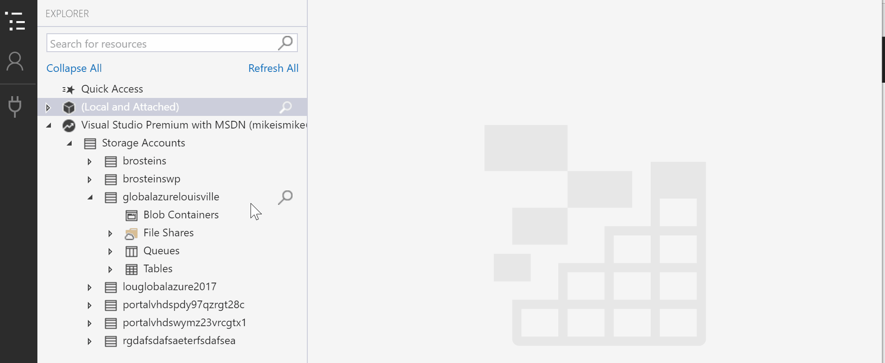
Summary
In this chapter, you learned:
- Why you shouldn't store blobs in Azure table storage, and that blob storage is a much better choice
- When interacting with the cloud, you should use asynchronous method calls
- When you reference blob containers, always check if they exist before using them
In the next chapter, we'll continue to explore blob storage by uploading profile pictures to a holding zone where images will need to be approved prior to being accepted as a profile picture.
Building a Staging Blob Container Profile Pictures
This is a short chapter, but sets the stage for something big. Imagine the web app we've been building was going to be used in a production capacity. Do you really want to give users the ability to upload any image for their profile picture? Some images just aren't suitable for a work environment.
Wouldn't it be nice to add a step into the profile image upload process where images were screened? But, who's going to do the screening? Do you really have time to screen every images uploaded. Maybe it makes sense for a small site, but what happens when there's thousands of users?
For me, there's no chance that I would introduce a manual screen step. Instead, I'd look for every opportunity to automate this process so I can spend the time to write code once, and use it every time someone changes their profile picture.
Over the next several chapters, we'll be building an automated image screening process using Microsoft's Cognitive Services Computer Vision API. We'll combine various Azure services: blob storage containers, an Azure function listening for changes to a blob container, and REST service calls to the computer vision API. The computer vision API will process each uploaded image, indicating whether it is work appropriate. Images that are acceptable will be moved to the profile picture blob container. Invalid images will be moved to a separate container.
In this chapter, we'll start building the automated process by modifying our web app to place the uploaded images in a staging blob container. Let's get started.
Creating a Profile Picture Staging Blob Container
Exercise: Extending ASP.NET Identity with a Profile Picture
This is a fairly short exercise, where you'll do 2 things to create a staging blob container for profile pictures:
- Step 1: Create a web.config app setting for the upload/staging blob container name
- Step 2: Update the upload image function to upload images to the staging blob container
Step 1: Create a web.config app setting for the upload/staging blob container name
Add a new app setting to the web.config file named ProfilePicUploadBlobContainer.
<add key="ProfilePicUploadBlobContainer" value="uploaded" />
Step 2: Update the upload image function to upload images to the staging blob container
Update the UploadImageAsync() function to change the blob container images are uploaded to. You can find this function in ManageController.cs.
public async Task<string> UploadImageAsync(string currentBlobUrl, HttpPostedFileBase imageToUpload)
{
string imageFullPath = null;
if (imageToUpload == null || imageToUpload.ContentLength == 0)
{
return null;
}
try
{
// connect to our storage account
var cloudStorageAccount = CloudStorageAccount.Parse($"DefaultEndpointsProtocol=https;AccountName={ConfigurationManager.AppSettings["StorageAccountName"]};AccountKey={ConfigurationManager.AppSettings["StorageAccountKey"]};");
var cloudBlobClient = cloudStorageAccount.CreateCloudBlobClient();
var cloudBlobContainer = cloudBlobClient.GetContainerReference(ConfigurationManager.AppSettings["ProfilePicUploadBlobContainer"]);
// create the blob storage container, if needed
if (await cloudBlobContainer.CreateIfNotExistsAsync())
{
await cloudBlobContainer.SetPermissionsAsync(
new BlobContainerPermissions
{
PublicAccess = BlobContainerPublicAccessType.Blob
}
);
}
var imageName = $"{Guid.NewGuid()}{Path.GetExtension(imageToUpload.FileName)}";
// upload image blob
var cloudBlockBlob = cloudBlobContainer.GetBlockBlobReference(imageName);
cloudBlockBlob.Properties.ContentType = imageToUpload.ContentType;
await cloudBlockBlob.UploadFromStreamAsync(imageToUpload.InputStream);
// get URL of uploaded image blob - replacing the staging/upload container name
// with the valid blob container name
imageFullPath = cloudBlockBlob.Uri.ToString().Replace(ConfigurationManager.AppSettings["ProfilePicUploadBlobContainer"], ConfigurationManager.AppSettings["ProfilePicBlobContainer"]);
}
catch (Exception ex)
{
// in reality, you should handle this...
}
return imageFullPath;
}
The changes made are straight-forward, but we'd like to call attention to the imageFullPath variable and it's value:
imageFullPath =
cloudBlockBlob.Uri.ToString()
.Replace(
ConfigurationManager.AppSettings["ProfilePicUploadBlobContainer"],
ConfigurationManager.AppSettings["ProfilePicBlobContainer"]);
From the previous chapter, you'll recall that cloudBlockBlob is a reference to the uploaded blob image. After this change, the blob container we'll be uploading it to the staging/upload container named uploaded (stored in the ProfilePicUploadBlobContainer app setting). This staging/upload container should not be returned to the app, because images in this container have not been processed with the computer vision API.
When images get processed, valid profile pictures will be placed in the profile-pics container (stored in the ProfilePicBlobContainer app setting). As a result, the URL returned from the upload function returns the URL of the valid image.
Let's test it out! Compile and run the web app. When you upload a new image, you should expect the image to be placed into the uploaded blob container, and the profile management page to not display an image (because we haven't created the Azure function to validate the pictures with the computer vision API).
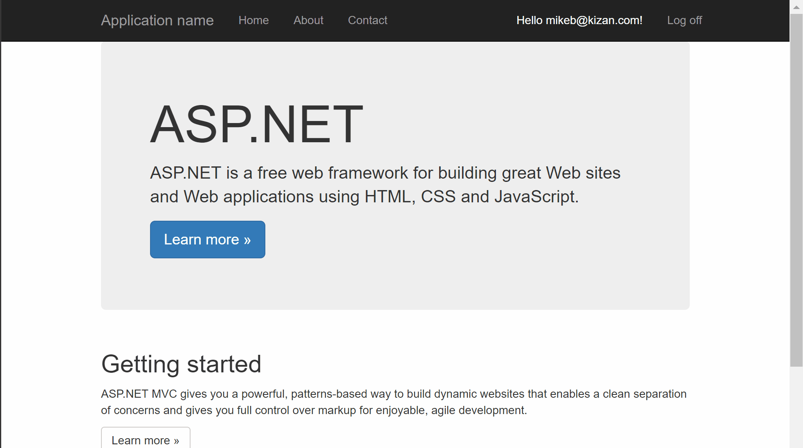
Use Storage Explorer to check out the blob containers. You should see the profile-pics and uploaded containers. The profile-pics container will have the original profile picture inside, and the uploaded container will have the new profile picture.
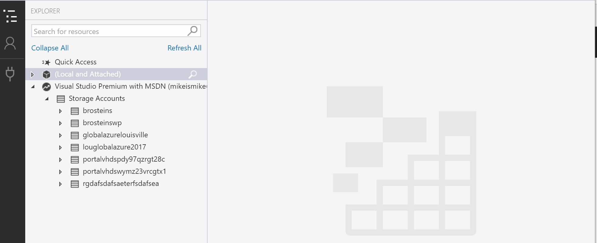
That concludes this chapter. We said it would be a short one.
Summary
In this chapter, you:
- Learned about the automated profile picture analysis process we'll be implementing
- Updated the web app to upload images to a different blob container that will be used as an upload/staging area
- Verified the creation of the upload/staging blob container and verified images were added to the correct blob container
In the next chapter, we'll finish building the automated profile picture analysis process.
Processing Profile Pictures with Azure Functions
NOTE: This chapter was adapted from Microsoft's Technical Community Content Github repository. To find out more and see the original content, visit Github.
Functions have been the basic building blocks of software since the first lines of code were written and the need for code organization and reuse became a necessity. Azure Functions expand on these concepts by allowing developers to create "serverless", event-driven functions that run in the cloud and can be shared across a wide variety of services and systems, uniformly managed, and easily scaled based on demand. In addition, Azure Functions can be written in a variety of languages, including C#, JavaScript, Python, Bash, and PowerShell, and they're perfect for building apps and nanoservices that employ a compute-on-demand model.
In this chapter, you'll create an Azure Function that monitors a blob container in Azure Storage for new images, and then performs automated analysis of the images using the Microsoft Cognitive Services Computer Vision API. Specifically, The Azure Function will analyze each image that is uploaded to the container for inappropriate content and create a copy of the image in another container. Images that contain inappropriate content will be copied to one container (the rejected container), and images that are acceptable copied to another (the profile-pics container). In addition, the analysis data returned by the Computer Vision API will be stored in blob metadata.
Creating an Azure Function App
The first step in writing an Azure Function is to create an Azure Function App. In this exercise, you'll create an Azure Function App using the Azure Portal. Then you'll add the rejected blob container to the storage account you've used throughout this workshop. The rejected container will contain images classified as inappropriate content.
If you're wondering about the other two containers mentioned above, don't worry. You've already created them as part of previous chapters. We'll continue to use them in this chapter.
Exercise: Create an Azure Function App
Open the Azure Portal in your browser. If asked to log in, do so using your Microsoft account.
Click + New, followed by Compute and Function App.

You'll be presented with a Function App creation blade.
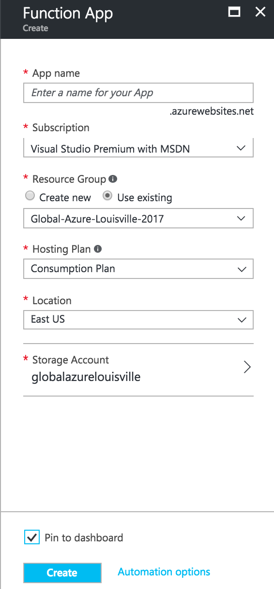
Enter an app name that is unique within Azure. Under Resource Group, select Use existing and select the resource group your created earlier. Choose App Service plan/Location for the Hosting Plan, and select the same storage account you created earlier. Make sure the Pin to dashboard is checked.
Click Create to create a new Function App. The function app will start it's deployment process.
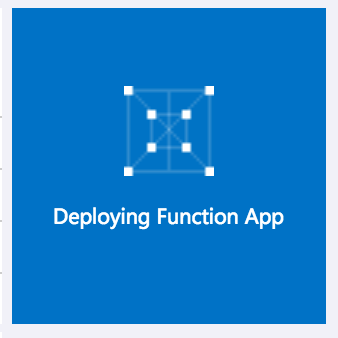
While you're waiting for the function app to be created, open the resource group created earlier and locate your storage account. Open the storage account in the portal.
Click Blobs to view the contents of blob storage.

You should see several containers inside of your blob storage: profile-pics, uploaded, and azure-webjobs-hosts. You previously created profile-pics and uploaded during previous chapters. The azure-webjobs-hosts container is created by the function app provisioning process, so you may not see it if the function app you just created hasn't been fully provisioned.
Click + Container to add a container.
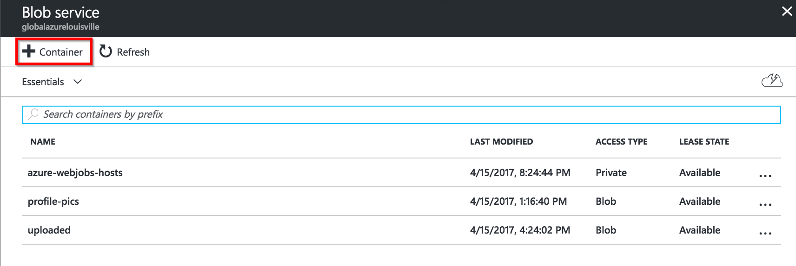
Type rejected into the Name box. Select Blob for the Access type. Then click the Create button to create the container.
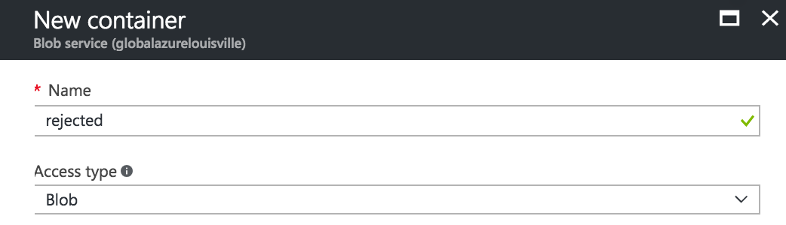
Repeat the previous steps to add containers named profile-pics and uploaded if they don't exist.
Great work! You've created the function app and have the three containers needed to store uploaded, rejected, and valid profile pictures. The next step is to add an Azure Function.
Creating an Azure Function
Once you have created an Azure Function App, you can add Azure Functions to it. In this exercise, you'll add a function to the Function App you created in the previous exercise and write C# code that uses the Computer Vision API to analyze images added to the "uploaded" container for inappropriate content.
Exercise: Create an Azure Function
Return to the workshop dashboard and click the Azure Function App that you created and pinned in the previous exercise.

Click the + symbol next to Functions, as shown in the image below.
Scroll past the Get started quickly... heading and click Custom function under the Get started on your own heading. Click BlobTrigger-CSharp.
Enter BlobImageAnalysis for the function name and "uploaded/{name}.{ext}" into the Path box. (The latter applies the blob storage trigger to the "uploaded" container that you created earlier in this workshop.) {name} and {ext} refer to function app parameters that will be passed in by the Azure function app API automatically. For example, when a profile picture is uploaded with the name mypicture.jpeg, it will be parsed into two variables: name (with a value of mypicture) and ext (with a value of jpeg).
Click the Create button to create the Azure Function.
When the Azure Function is created, a code editor window will appear.
Replace the code shown in the code editor with the following statements:
using Microsoft.WindowsAzure.Storage.Blob;
using Microsoft.WindowsAzure.Storage;
using System.Net.Http.Headers;
using System.Configuration;
public async static Task Run(Stream myBlob, string name, string ext, TraceWriter log)
{
log.Info($"Analyzing uploaded image {name} for appropriate content...");
var array = await ToByteArrayAsync(myBlob);
var result = await AnalyzeImageAsync(array, log);
log.Info("Is Adult: " + result.adult.isAdultContent.ToString());
log.Info("Adult Score: " + result.adult.adultScore.ToString());
log.Info("Is Racy: " + result.adult.isRacyContent.ToString());
log.Info("Racy Score: " + result.adult.racyScore.ToString());
// Reset stream location
myBlob.Seek(0, SeekOrigin.Begin);
if (result.adult.isAdultContent || result.adult.isRacyContent)
{
// profile picture is NOT acceptable - copy blob to the "rejected" container
StoreBlobWithMetadata(myBlob, "rejected", name, ext, result, log);
}
else
{
// profile picture is acceptable - copy blob to the "profile-pics" container
StoreBlobWithMetadata(myBlob, "profile-pics", name, ext, result, log);
}
}
private async static Task<ImageAnalysisInfo> AnalyzeImageAsync(byte[] bytes, TraceWriter log)
{
HttpClient client = new HttpClient();
var key = ConfigurationManager.AppSettings["SubscriptionKey"].ToString();
client.DefaultRequestHeaders.Add("Ocp-Apim-Subscription-Key", key);
HttpContent payload = new ByteArrayContent(bytes);
payload.Headers.ContentType = new MediaTypeWithQualityHeaderValue("application/octet-stream");
var results = await client.PostAsync("https://westus.api.cognitive.microsoft.com/vision/v1.0/analyze?visualFeatures=Adult", payload);
var result = await results.Content.ReadAsAsync<ImageAnalysisInfo>();
return result;
}
// Writes a blob to a specified container and stores metadata with it
private static void StoreBlobWithMetadata(Stream image, string containerName, string blobName, string ext, ImageAnalysisInfo info, TraceWriter log)
{
log.Info($"Writing blob and metadata to {containerName} container...");
var connection = ConfigurationManager.AppSettings["AzureWebJobsStorage"].ToString();
var account = CloudStorageAccount.Parse(connection);
var client = account.CreateCloudBlobClient();
var container = client.GetContainerReference(containerName);
try
{
var blob = container.GetBlockBlobReference($"{blobName}.{ext}");
if (blob != null)
{
// Upload the blob
blob.UploadFromStream(image);
// Set the content type of the image
blob.Properties.ContentType = "image/" + ext;
blob.SetProperties();
// Get the blob attributes
blob.FetchAttributes();
// Write the blob metadata
blob.Metadata["isAdultContent"] = info.adult.isAdultContent.ToString();
blob.Metadata["adultScore"] = info.adult.adultScore.ToString("P0").Replace(" ","");
blob.Metadata["isRacyContent"] = info.adult.isRacyContent.ToString();
blob.Metadata["racyScore"] = info.adult.racyScore.ToString("P0").Replace(" ","");
// Save the blob metadata
blob.SetMetadata();
}
}
catch (Exception ex)
{
log.Info(ex.Message);
}
}
// Converts a stream to a byte array
private async static Task<byte[]> ToByteArrayAsync(Stream stream)
{
Int32 length = stream.Length > Int32.MaxValue ? Int32.MaxValue : Convert.ToInt32(stream.Length);
byte[] buffer = new Byte[length];
await stream.ReadAsync(buffer, 0, length);
return buffer;
}
public class ImageAnalysisInfo
{
public Adult adult { get; set; }
public string requestId { get; set; }
}
public class Adult
{
public bool isAdultContent { get; set; }
public bool isRacyContent { get; set; }
public float adultScore { get; set; }
public float racyScore { get; set; }
}
Run is the method called each time the function is executed. The Run method uses a helper method named AnalyzeImageAsync to pass each blob added to the "uploaded" container to the Computer Vision API for analysis. Then it calls a helper method named StoreBlobWithMetadata to create a copy of the blob in either the "profile-pics" container or the "rejected" container, depending on the scores returned by AnalyzeImageAsync.
Click the Save button at the top of the code editor to save your changes. Then click View Files.
Click + Add to add a new file, and name the file project.json.

Add the following statements to project.json:
{
"frameworks": {
"net46": {
"dependencies": {
"WindowsAzure.Storage": "8.1.1"
}
}
}
}
Click the Save button to save your changes. Then click run.csx to go back to that file in the code editor.
An Azure Function written in C# has been created, complete with a JSON project file containing information regarding project dependencies. The next step is to add an application setting that Azure Function relies on.
Adding a Subscription Key to Application Settings
The Azure Function you created in the previous exercise loads a subscription key for the Microsoft Cognitive Services Computer Vision API from application settings. This key is required in order for your code to call the Computer Vision API, and is transmitted in an HTTP header in each call. In this exercise, you will add an application setting containing the subscription key to the Function App.
Exercise: Add a Subscription Key to Application Settings
Open a new browser window and navigate to https://www.microsoft.com/cognitive-services/en-us/subscriptions. If you haven't signed up for the Computer Vision API, do so now. (Signing up is free.) Then click Copy under Key 1 in your Computer Vision subscription to copy the subscription key to the clipboard.

Return to your Function App in the Azure Portal and click on the function app name on the left (as shown in the image below).

On the right, select the Platform features tab at top. Under General Settings, click Application settings.
Scroll down until you find the App settings section. Add a new app setting named SubscriptionKey, and paste the Cognitive Services API subscription key that is on the clipboard into the Value box. Then click Save at the top of the blade.
The app settings are now configured for your Azure Function.
Testing the Azure Function
Your function is configured to listen for changes to the blob container named "uploaded" that you created earlier in this workshop. Each time an image appears in the container, the function executes and passes the image to the Computer Vision API for analysis. To test the function, you simply upload images to the container. In this exercise, you will use the Azure Portal to upload images to the "uploaded" container and verify that copies of the images are placed in the "accepted" and "rejected" containers.
Exercise: Uploading an Image to Blob Storage
In the Azure Portal, go to the resource group created for your Function App. Then click the storage account that was created for it.
Click Blobs to view the contents of blob storage.
Click uploaded to open the "uploaded" container.
Click Upload.

Click the button with the folder icon to the right of the Files box. Select one or more image files. Then click the Upload button to upload the files to the "uploaded" container.
WARNING: Due to the nature of this exercise, your Azure Function can detect adult and racy images. Please, DO NOT upload inappropriate images during the lab. Be respectful of those around you.

Return to the blade for the "uploaded" container and verify that the images you uploaded were uploaded. eight images were uploaded.
NOTE: These screenshots may be slightly different due to the number and names of images you uploaded.

Close the blade for the "uploaded" container and open the "profile-pics" container.
Verify that the "profile-pics" container holds the images you uploaded. These are the images that were classified as appropriate images by the Computer Vision API.
It may take a minute or more for all of the images to appear in the container. If necessary, click Refresh every few seconds until you see all the images you expect.
Close the blade for the "profile-pics" container and open the blade for the "rejected" container.
Verify that the rejected container holds the number of images you would expect to be rejected. These images were classified as inappropriate by the Computer Vision API.
The presence of all images in the profile-pics and rejected containers is proof that your Azure Function executed each time an image was uploaded to the "uploaded" container. If you would like, return to the BlobImageAnalysis function in the portal and click Monitor. You will see a log detailing each time the function executed.
Viewing Blob Metadata
What if you would like to view the scores for adult content and raciness returned by the Computer Vision API for each image uploaded to the "uploaded" container? The scores are stored in blob metadata for the images in the "profile-pics" and "rejected" containers, but blob metadata can't be viewed through the Azure Portal.
In this exercise, you will use the cross-platform Microsoft Azure Storage Explorer to view blob metadata and see how the Computer Vision API scored the images you uploaded.
Exercise: View Blob Metadata with Storage Explorer
Start Storage Explorer. Find your storage account you've been working with and expand the list of blob containers underneath it. Then click the container named profile-pics.
Right-click an image in the "profile-pics" container and select Properties from the context menu.
Inspect the blob's metadata. IsAdultContent and isRacyContent are Boolean values that indicate whether the Computer Vision API detected adult or racy content in the image. adultScore and racyScore are the computed probabilities.
You can probably imagine how this might be used in the real world. Suppose you were building a photo-sharing site and wanted to prevent adult images from being stored. You could easily write an Azure Function that inspects each image that is uploaded and deletes it from storage if it contains adult content.
Summary
In this chapter you learned how to:
- Create an Azure Function App
- Write an Azure Function that uses a blob trigger
- Add application settings to an Azure Function App
- Use Microsoft Cognitive Services to analyze images and store the results in blob metadata
This is just one example of how you can leverage Azure Functions to automate repetitive tasks. Experiment with other Azure Function templates to learn more about Azure Functions and to identify additional ways in which they can aid your research or business.
In the next chapter, we'll take the web app to the next level by adding in a SignalR hub, and automatically updating a profile picture if it's approved.
Using SignalR to Asynchronously Update Profile Pictures
In the last several chapters, you learned how to create an asynchronous image analysis process using Azure functions, blob storage, and the Cognitive Services Computer Vision API. Even though we automated the profile picture review and approval process, we inadvertently created another problem: our web app doesn't support the asynchronous process (meaning, users must continuously refresh their browser to check if their profile picture was approved).
If there were only a way to notify the web browser when a profile picture was approved. There is: ASP.NET SignalR.
- DEFINITION: ASP.NET SignalR (commonly known as simple SignalR) is a library for ASP.NET developers that makes developing real-time web functionality easy. SignalR allows bi-directional communication between server and client. Servers can now push content to connected clients instantly as it becomes available. SignalR supports Web Sockets, and falls back to other compatible techniques for older browsers.
In this chapter, you'll learn how to use SignalR to notify users on the profile management page when profile pictures are approved.
What You're Building
Before we jump into modifying our web app, let's take a quick look at the process SignalR will help us establish:
After a user updates their profile picture, our app will redirect to the profile management page. When the page loads, JavaScript on the page will establish a connection to a SignalR hub. SignalR hubs allow apps to make remote procedure calls (RPCs) from a server to connected clients. After connecting to the SignalR hub, the profile management page waits and listens for a message from the server. If the user browses away from the page, the browser stops listening and disconnects from the SignalR hub.
When the Azure function finishes processing an acceptable profile picture, it POSTs an HTTP request to a Web API endpoint hosted in our web app. The Web API endpoint pushes a message to the clients listening to the SignalR hub. The message includes the profile picture file name that was just accepted.
Back on the client side, when a message is received, the page determines if the profile picture accepted by the Azure function is the picture uploaded by the client. If it is, the image is reloaded by appending a random query string to the image's source URL.
Adding SignalR to the Web App
In this exercise, you'll be adding SignalR to the web app by creating:
- client-side JavaScript to listen for hub messages
- a SignalR hub to send messages
Exercise: Add SignalR to the web app
Install SignalR by adding the following NuGet packages. Note that by installing Microsoft.AspNet.SignalR, the remainder of the packages should install because they're dependencies.
- Microsoft.AspNet.SignalR
- Microsoft.AspNet.SignalR.Core
- Microsoft.AspNet.SignalR.JS
- Microsoft.AspNet.SignalR.SystemWeb
Manage\Index.cshtml
Add a SignalR script reference and hub listener code to the Manage\Index view. When you add this reference, be sure to check the version of SignalR installed. You can find the version number by looking in the Scripts folder of the MVC app. Look for a file named jquery.signalr-X.Y.Z.js, where X.Y.Z is the MAJOR.MINOR.PATCH version number of SignalR. Our version is v2.2.1.
Add the JavaScript code snippet to the bottom of the view.
@section scripts {
<!--Reference the SignalR library - make sure it's version matches the installed version.-->
<script src="~/Scripts/jquery.signalR-2.2.1.min.js"></script>
<!--Reference the auto-generated SignalR hub script.-->
<script src="~/signalr/hubs"></script>
<!--SignalR script to handle profile picture updated message.-->
<script>
$(function () {
// Reference the auto-generated proxy for the hub
var profilePic = $.connection.profilePicHub;
// Function the hub calls to notify the page a profile picture has
// been updated
profilePic.client.profilePicUpdated = function (profilePicUrl) {
if (profilePicUrl) {
var expectedProfilePicUrl = $("#profilePictureUrl").val();
if (expectedProfilePicUrl === profilePicUrl) {
$("#profilePicture").attr("src", profilePicUrl + "?" + Math.random());
}
}
};
// Start the hub connection
$.connection.hub.start().done(function () {
// do nothing extra on load of the hub, but if we needed
// to do something special, we could
});
});
</script>
}
In the code snippet above, 3 things happen when the page loads:
A reference to the profile picture SignalR hub (
$.connection.profilePicHub) is stored. You may be wondering why/how the JavaScript code knows whatprofilePicHubis. For now, just know that SignalR creates that for you automatically when the page loads, and that you'll learn more about it later in this chapter.We establish a client-side function (
profilePic.client.profilePicUpdated) that is called when the server pushes a method. The URL of the profile picture is passed to this function. The function uses a hidden field on the page (remember adding@Html.HiddenFor(x => x.ProfilePicUrl, new { id = "profilePictureUrl" })to the MVC view earlier?) . The hidden field is used to check whether the URL passed to the function is the URL of the current user's profile picture. If it is, the profile picture image's source property is updated with a random query string: this is a cool trick to force the image to be reloaded.The connection with the SignalR hub is established, beginning the listening process. When the hub connection starts, we have the opportunity to run additional code, but in our circumstance, there's no need.
NOTE: You may be wondering why we're checking to ensure the URL passed to a client is the right URL. Imagine several users upload profile pictures simultaneously, each placing their picture in the uploaded blob container. The Azure function indiscriminately processes each image, and POSTs back to our Web API endpoint. The web app then broadcasts the picture URL to all clients connected to the SignalR hub. It's because of this broadcast that clients receive messages from the server about their image and others images. There are ways to change the way SignalR works, but for the purposes of this workshop, we've stuck with the broadcast approach. But, in a more professional setting, you wouldn't want to broadcast messages to clients that either aren't expecting them or to which they don't pertain.
ProfilePicHub.cs
Next, we'll create our SignalR hub by adding a new class to the root of the web app project. Name the class ProfilePicHub and add the code below.
- DEFINITION: SignalR hubs allow apps to make remote procedure calls (RPCs) from a server to connected clients. The hub manages and maintains the list of connected clients transparently, so you don't have to worry about it.
using Microsoft.AspNet.SignalR;
namespace Web
{
public class ProfilePicHub : Hub
{
private readonly ProfilePicBroadcaster _profilePicture;
public ProfilePicHub(ProfilePicBroadcaster profilePicture)
{
_profilePicture = profilePicture;
}
}
}
As you can see, there's not much going on in the ProfilePicHub class, but that's because all the heavy lifting is being done in the inherited Hub class.
NOTE: The name of the ProfilePicHub class isn't a coincidence. Earlier in this exercise, you created a reference to the SignalR hub in JavaScript:
var profilePic = $.connection.profilePicHub;. When you inherit from the Hub class, SignalR will create a JavaScript object of the same name, placing it inside of the$.connectionobject.
You'll also notice the ProfilePicBroadcaster class that is passed in as a dependency to this class. This class lives up to it's name and broadcasts messages when a profile picture is updated. We have yet to define the class, so let's tackle that now.
ProfilePicBroadcaster.cs
Add another class to the root of the web app named ProfilePicBroadcaster and add the following code to it.
using Microsoft.AspNet.SignalR;
using Microsoft.AspNet.SignalR.Hubs;
using System;
namespace Web
{
/// <summary>
/// FROM https://docs.microsoft.com/en-us/aspnet/signalr/overview/getting-started/tutorial-server-broadcast-with-signalr
/// </summary>
public class ProfilePicBroadcaster
{
// Code block 1: singleton instance of this class to maintain a single
// list of connected clients across the entire app
private readonly static Lazy<ProfilePicBroadcaster> _instance = new Lazy<ProfilePicBroadcaster>(() => new ProfilePicBroadcaster(GlobalHost.ConnectionManager.GetHubContext<ProfilePicHub>().Clients));
// Code block 2: constructor
private ProfilePicBroadcaster(IHubConnectionContext<dynamic> clients)
{
Clients = clients;
}
// Code block 3: public static accessor to create the singleton of this class
public static ProfilePicBroadcaster Instance
{
get
{
return _instance.Value;
}
}
// Code block 4: private list of connected clients
private IHubConnectionContext<dynamic> Clients
{
get;
set;
}
// Code block 5: public function to broadcast a message to all connected clients
public void BroadcastUpdatedProfilePic(string profilePicUrl)
{
Clients.All.profilePicUpdated(profilePicUrl);
}
}
}
This looks like a lot of code, but it's really straight forward if you break it down the right way. The code was adapted from the official SignalR getting started tutorial. It's worth checking out if you want to get an idea of everything SignalR can do.
In whole, the purpose of this class is to store a reference to the connected SignalR clients, and provide a mechanism to broadcast a message to all clients.
More specifically, there's 5 code blocks:
Blocks 1-4 work together to lazily instantiate a singleton instance of this class. The class is intended to be used like a factory class, where you obtain an instantiated reference of the class through the
ProfilePicBroadcaster.Instanceproperty. When this property is referenced the first time, theprivate readonly static _instancevariable is created. The code is a bit pretentious and may look confusing if you don't have any experience with theLazy<>class and the singleton pattern. An easy way to think of these 4 code blocks is to know that when you callProfilePicBroadcaster.Instanceone or more times, you'll get the same instance of the object, meaning .NET only fires the constructor once and only uses the memory space once.Block 5 is the only public instance method of the class. When called, it broadcasts a message to all connected clients by calling a method on
Clients.All. You may notice something interesting about the method name called:profilePicUpdated(profilePicUrl). This method is actually the method name we created in JavaScript earlier on theclientobject:profilePic.client.profilePicUpdated = function (profilePicUrl) { ... };. As long as the names of these methods are identical, SignalR passes data between the C# function call you've written here and the JavaScript function. Pretty cool.
NOTE: We dropped a few development pattern names (singleton and factory) in this exercise, but didn't take the time to define them. We're not going to dive into the definition of these here, because others have written about them extensively. We particularly like Martin Fowler's explanation of these. His articles on Inversion of Control covers both of these. If you've never taken the time to read it, it's highly recommended.
Startup.cs
Ok, we're almost finished. The last step to configuring SignalR is to add it to the web app's startup process. Open the Startup.cs class in the root of the web project and add a line to configure SignalR: app.MapSignalR();.
using Microsoft.Owin;
using Owin;
[assembly: OwinStartupAttribute(typeof(Web.Startup))]
namespace Web
{
public partial class Startup
{
public void Configuration(IAppBuilder app)
{
ConfigureAuth(app);
app.MapSignalR();
}
}
}
Adding a Web API Endpoint
Nice work! You've added SignalR to your web project. But, it doesn't do us much good if we can't trigger ProfilePicBroadcaster.BroadcastUpdatedProfilePic() from our Azure function.
There's a multitude of ways to solve this problem, but we've chosen something straight-forward: add a Web API endpoint that can trigger the broadcast method. Let's get started building this out.
Exercise: Add a Web API Endpoint
Add Web API to the solution by adding 4 packages. Note that you should only need to install Microsoft.AspNet.WebApi because the other packages are dependencies that will be added automatically.
Install these 4 NuGet packages:
- Microsoft.AspNet.WebApi
- Microsoft.AspNet.WebApi.Core
- Microsoft.AspNet.WebApi.WebHost
- Microsoft.AspNet.WebApi.Client
WebApiConfig.cs
Create a file named WebApiConfig.cs in the App_Start folder. Add this code to the file, which configures several defaults for Web API.
using System;
using System.Collections.Generic;
using System.Linq;
using System.Web.Http;
namespace Web
{
public static class WebApiConfig
{
public static void Register(HttpConfiguration config)
{
config.MapHttpAttributeRoutes();
config.Routes.MapHttpRoute(
name: "DefaultApi",
routeTemplate: "api/{controller}/{id}",
defaults: new { id = RouteParameter.Optional }
);
}
}
}
Global.asax.cs
Open the Global.asax.cs file and add a reference to System.Web.Http at the top:
using System.Web.Http;
Keep Global.asax.cs open and add register Web API by adding GlobalConfiguration.Configure(WebApiConfig.Register); before RouteConfig.RegisterRoutes(...) is called:
using System;
using System.Collections.Generic;
using System.Linq;
using System.Web;
using System.Web.Mvc;
using System.Web.Optimization;
using System.Web.Routing;
using System.Web.Http;
namespace Web
{
public class MvcApplication : System.Web.HttpApplication
{
protected void Application_Start()
{
//ElCamino - Added to create azure tables
ApplicationUserManager.StartupAsync();
AreaRegistration.RegisterAllAreas();
FilterConfig.RegisterGlobalFilters(GlobalFilters.Filters);
GlobalConfiguration.Configure(WebApiConfig.Register); // register Web API before registering routes
RouteConfig.RegisterRoutes(RouteTable.Routes);
BundleConfig.RegisterBundles(BundleTable.Bundles);
}
}
}
Well, that's all it takes to add Web API to the project, so let's start using it by adding an endpoint.
ProfilePictureController.cs
Add a new Web API controller named ProfilePicture by adding a class to the Controllers folder named ProfilePictureController.cs. Add this code:
using System;
using System.Collections.Generic;
using System.Linq;
using System.Net;
using System.Net.Http;
using System.Web.Http;
namespace Web.Controllers
{
public class ProfilePictureController : ApiController
{
[HttpPost]
public void Post([FromBody] string profilePicUrl)
{
ProfilePicBroadcaster.Instance.BroadcastUpdatedProfilePic(profilePicUrl);
}
}
}
This Web API endpoint will be hosted from ~\api\ProfilePicture and accept a URL in the HTTP POST body. When it's called, it uses the ProfilePicBroadcaster class you created earlier to broadcast the URL to all connected clients.
NOTE: In a real-world scenario, I'd never leave a Web API endpoint completely open to the public. I'd secure it with some type of authentication and authorization like OAuth, or at least an API key. But, for our purposes of this lab, we're going to leave it wide open. Just understand this is a bad practice.
That's it! We're finished with the web project. But, there's something you'll need to do before moving on.
WARNING: It's critical that you re-publish the project to the Azure web app you created earlier. In the next section, you'll be updating your Azure function to POST the update profile picture URL to a public Web API endpoint. If your Web API endpoint isn't publicly exposed, the Azure function won't be able to communicate with it.
Calling a Web API Endpoint from an Azure Function
The last step is to call the Web API endpoint from the Azure function after a profile picture is accepted as an appropriate picture.
Exercise: Call a Web API Endpoint from an Azure Function
Navigate back to the Azure portal and find your Azure function app on the dashboard you created earlier.
Open the function app and locate the BlobImageAnalysis function.
Replace the function code with the code below.
using Microsoft.WindowsAzure.Storage.Blob;
using Microsoft.WindowsAzure.Storage;
using System.Net.Http.Headers;
using System.Configuration;
using System.Text;
using System.Web.Http;
using System.Net;
public async static Task Run(Stream myBlob, string name, string ext, TraceWriter log)
{
log.Info($"Analyzing uploaded image {name} for appropriate content...");
var array = await ToByteArrayAsync(myBlob);
var result = await AnalyzeImageAsync(array, log);
log.Info("Is Adult: " + result.adult.isAdultContent.ToString());
log.Info("Adult Score: " + result.adult.adultScore.ToString());
log.Info("Is Racy: " + result.adult.isRacyContent.ToString());
log.Info("Racy Score: " + result.adult.racyScore.ToString());
// Reset stream location
myBlob.Seek(0, SeekOrigin.Begin);
if (result.adult.isAdultContent || result.adult.isRacyContent)
{
// profile picture is NOT acceptable - copy blob to the "rejected" container
StoreBlobWithMetadata(myBlob, "rejected", name, ext, result, log);
}
else
{
// profile picture is acceptable - copy blob to the "profile-pics" container
StoreBlobWithMetadata(myBlob, "profile-pics", name, ext, result, log);
log.Info($"Calling signalR for image {name}.{ext}");
// alert SignalR hub
var webApiEndpointBaseUrl = ConfigurationManager.AppSettings["WebAPIEndpointBaseUrl"].ToString();
WebRequest request = WebRequest.Create($"{webApiEndpointBaseUrl}/api/ProfilePicture");
request.Method = "POST";
request.ContentType = "application/x-www-form-urlencoded";
ASCIIEncoding encoding = new ASCIIEncoding();
var storageAccountName = ConfigurationManager.AppSettings["StorageAccountName"].ToString();
var stringData = $"=https://{storageAccountName}.blob.core.windows.net/profile-pics/{name}.{ext}";
var data = encoding.GetBytes(stringData);
request.ContentLength = data.Length;
Stream newStream = request.GetRequestStream();
newStream.Write(data, 0, data.Length);
newStream.Close();
request.GetResponse();
log.Info($"SignalR call finished");
}
}
private async static Task<ImageAnalysisInfo> AnalyzeImageAsync(byte[] bytes, TraceWriter log)
{
HttpClient client = new HttpClient();
var key = ConfigurationManager.AppSettings["SubscriptionKey"].ToString();
client.DefaultRequestHeaders.Add("Ocp-Apim-Subscription-Key", key);
HttpContent payload = new ByteArrayContent(bytes);
payload.Headers.ContentType = new MediaTypeWithQualityHeaderValue("application/octet-stream");
var results = await client.PostAsync("https://westus.api.cognitive.microsoft.com/vision/v1.0/analyze?visualFeatures=Adult", payload);
var result = await results.Content.ReadAsAsync<ImageAnalysisInfo>();
return result;
}
// Writes a blob to a specified container and stores metadata with it
private static void StoreBlobWithMetadata(Stream image, string containerName, string blobName, string ext, ImageAnalysisInfo info, TraceWriter log)
{
log.Info($"Writing blob and metadata to {containerName} container...");
var connection = ConfigurationManager.AppSettings["AzureWebJobsStorage"].ToString();
var account = CloudStorageAccount.Parse(connection);
var client = account.CreateCloudBlobClient();
var container = client.GetContainerReference(containerName);
try
{
var blob = container.GetBlockBlobReference($"{blobName}.{ext}");
if (blob != null)
{
// Upload the blob
blob.UploadFromStream(image);
// Set the content type of the image
blob.Properties.ContentType = "image/" + ext;
blob.SetProperties();
// Get the blob attributes
blob.FetchAttributes();
// Write the blob metadata
blob.Metadata["isAdultContent"] = info.adult.isAdultContent.ToString();
blob.Metadata["adultScore"] = info.adult.adultScore.ToString("P0").Replace(" ","");
blob.Metadata["isRacyContent"] = info.adult.isRacyContent.ToString();
blob.Metadata["racyScore"] = info.adult.racyScore.ToString("P0").Replace(" ","");
// Save the blob metadata
blob.SetMetadata();
}
}
catch (Exception ex)
{
log.Info(ex.Message);
}
}
// Converts a stream to a byte array
private async static Task<byte[]> ToByteArrayAsync(Stream stream)
{
Int32 length = stream.Length > Int32.MaxValue ? Int32.MaxValue : Convert.ToInt32(stream.Length);
byte[] buffer = new Byte[length];
await stream.ReadAsync(buffer, 0, length);
return buffer;
}
public class ImageAnalysisInfo
{
public Adult adult { get; set; }
public string requestId { get; set; }
}
public class Adult
{
public bool isAdultContent { get; set; }
public bool isRacyContent { get; set; }
public float adultScore { get; set; }
public float racyScore { get; set; }
}
The code added uses two configuration app settings to POST the URL of the profile picture when it's acceptable.
Return to the Application Settings area of the function app.
Add app settings for WebAPIEndpointBaseUrl and StorageAccountName:
- WebAPIEndpointBaseUrl: set to the URL of the web app you created for this workshop, i.e., http://globalazurelouisville.azurewebsites.net. Do not include an ending slash.
- StorageAccountName: set to the name of the storage account you created for this workshop
You're finished!
Wow! That was a lot of changes, but we think it was worth it. Browse out to the Azure-hosted URL of your web app (ours is http://louglobalazure2017.azurewebsites.net/). You'll note this URL is different from the others in the guide, but it has the same functionality.
When you upload a new profile picture, you'll navigate back to the profile management page. After a few seconds, you should see the image update after the the Azure function analyzes it with the Cognitive Services API and calls the Web API endpoint we created. The Web API endpoint broadcasts the profile picture URL to all connected SignalR hub clients. When this is received by the listener in JavaScript, the source property of the image is updated to include a random query string, causing the image to re-fresh.
It's beautiful.
Summary
In this chapter you learned:
- SignalR hubs can be used to broadcast messages from a server to connected clients
- How to call a Web API endpoint from an Azure function